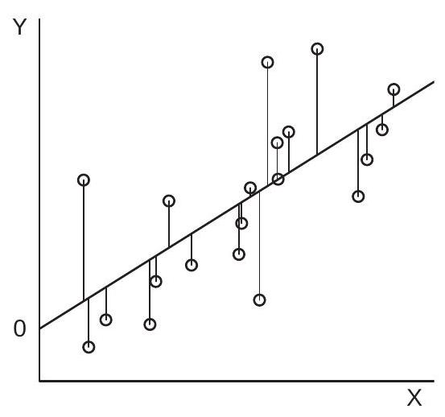
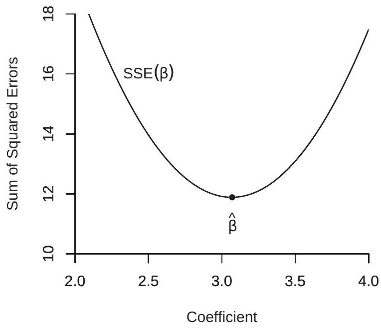
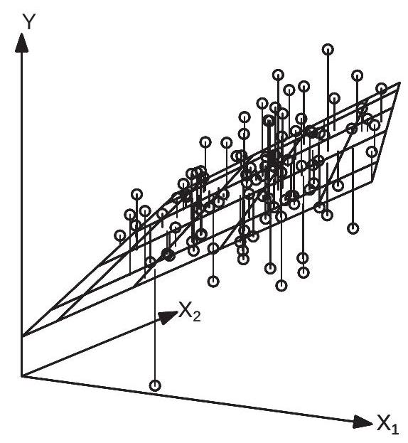
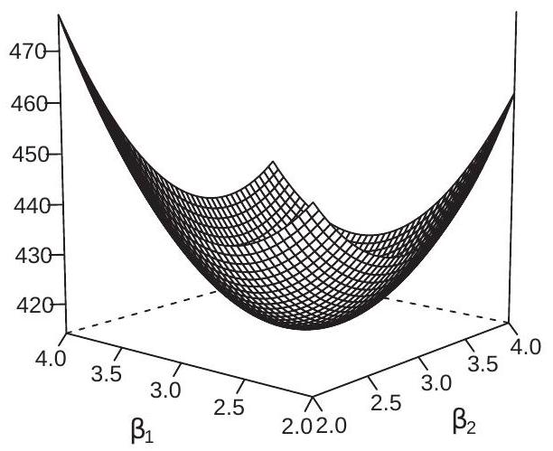
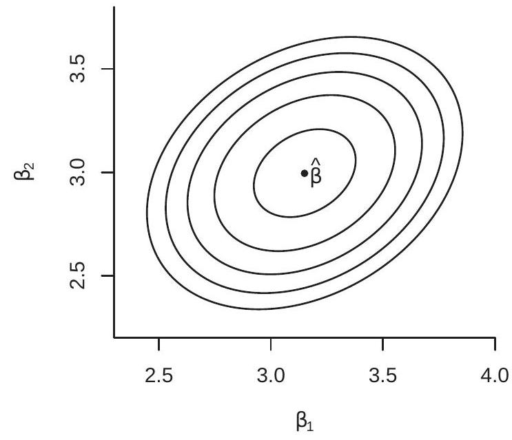
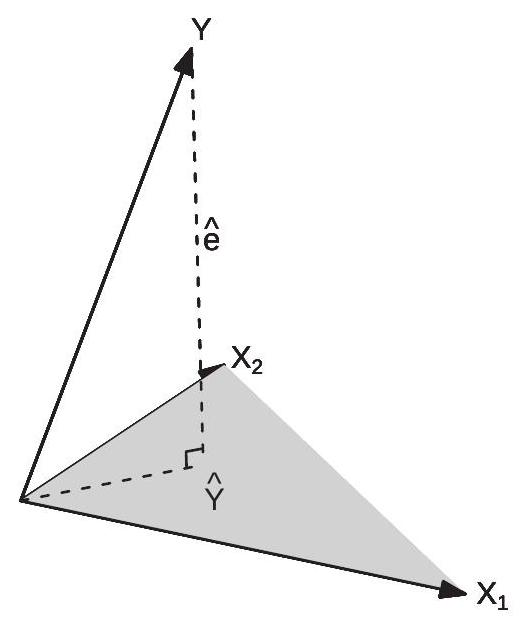
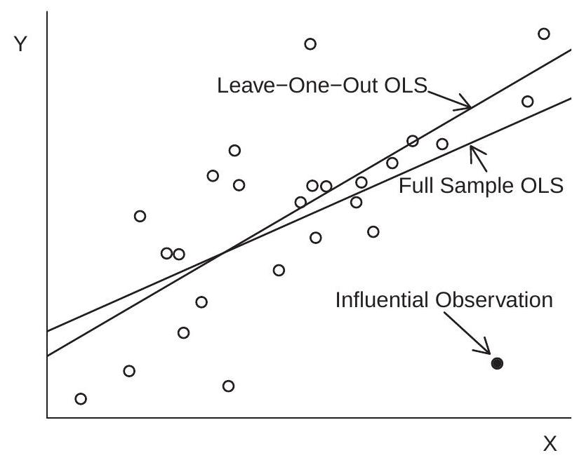
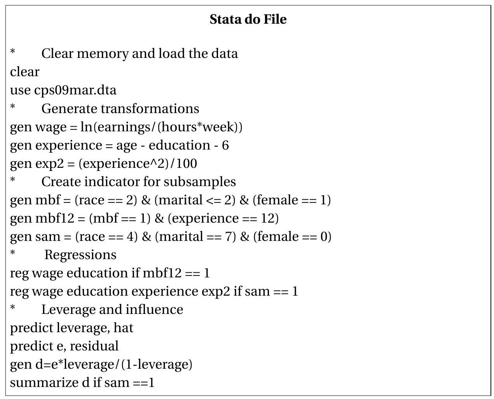
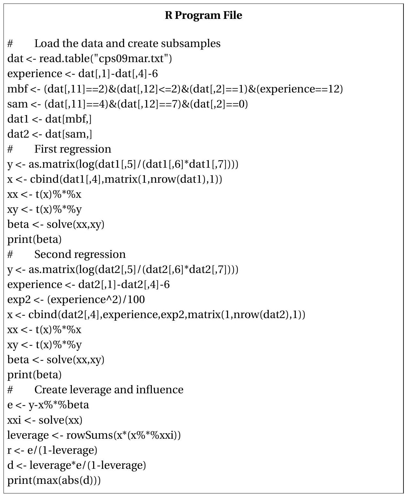
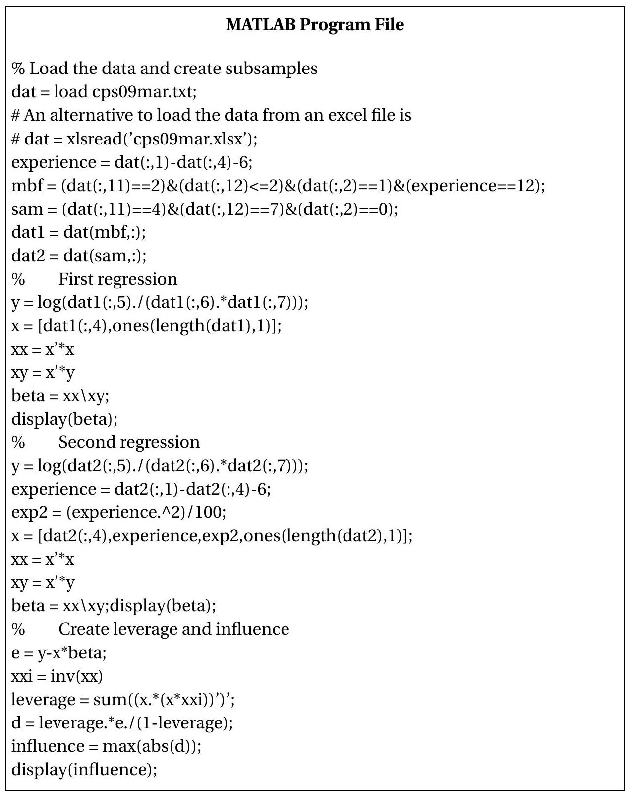

3 The Algebra of Least Squares
3.1 Introduction
In this chapter we introduce the popular least squares estimator. Most of the discussion will be algebraic, with questions of distribution and inference deferred to later chapters.
3.2 Samples
In Section \(2.18\) we derived and discussed the best linear predictor of \(Y\) given \(X\) for a pair of random variables \((Y, X) \in \mathbb{R} \times \mathbb{R}^{k}\) and called this the linear projection model. We are now interested in estimating the parameters of this model, in particular the projection coefficient
\[ \beta=\left(\mathbb{E}\left[X X^{\prime}\right]\right)^{-1} \mathbb{E}[X Y] . \]
We can estimate \(\beta\) from samples which include joint measurements of \((Y, X)\). For example, supposing we are interested in estimating a wage equation, we would use a dataset with observations on wages (or weekly earnings), education, experience (or age), and demographic characteristics (gender, race, location). One possible dataset is the Current Population Survey (CPS), a survey of U.S. households which includes questions on employment, income, education, and demographic characteristics.
Notationally we wish to distinguish observations (realizations) from the underlying random variables. The random variables are \((Y, X)\). The observations are \(\left(Y_{i}, X_{i}\right)\). From the vantage of the researcher the latter are numbers. From the vantage of statistical theory we view them as realizations of random variables. For individual observations we append a subscript \(i\) which runs from 1 to \(n\), thus the \(i^{t h}\) observation is \(\left(Y_{i}, X_{i}\right)\). The number \(n\) is the sample size. The dataset or sample is \(\left\{\left(Y_{i}, X_{i}\right): i=1, \ldots, n\right\}\).
From the viewpoint of empirical analysis a dataset is an array of numbers. It is typically organized as a table where each column is a variable and each row is an observation. For empirical analysis the dataset is fixed in the sense that they are numbers presented to the researcher. For statistical analysis we view the dataset as random, or more precisely as a realization of a random process.
The individual observations could be draws from a common (homogeneous) distribution or could be draws from heterogeneous distributions. The simplest approach is to assume homogeneity-that the observations are realizations from an identical underlying population \(F\).
Assumption 3.1 The variables \(\left\{\left(Y_{1}, X_{1}\right), \ldots,\left(Y_{i}, X_{i}\right), \ldots,\left(Y_{n}, X_{n}\right)\right\}\) are identically distributed; they are draws from a common distribution \(F\). This assumption does not need to be viewed as literally true. Rather it is a useful modeling device so that parameters such as \(\beta\) are well defined. This assumption should be interpreted as how we view an observation a priori, before we actually observe it. If I tell you that we have a sample with \(n=59\) observations set in no particular order, then it makes sense to view two observations, say 17 and 58 , as draws from the same distribution. We have no reason to expect anything special about either observation.
In econometric theory we refer to the underlying common distribution \(F\) as the population. Some authors prefer the label data-generating-process (DGP). You can think of it as a theoretical concept or an infinitely-large potential population. In contrast, we refer to the observations available to us \(\left\{\left(Y_{i}, X_{i}\right)\right.\) : \(i=1, \ldots, n\}\) as the sample or dataset. In some contexts the dataset consists of all potential observations, for example administrative tax records may contain every single taxpayer in a political unit. Even in this case we can view the observations as if they are random draws from an underlying infinitely-large population as this will allow us to apply the tools of statistical theory.
The linear projection model applies to the random variables \((Y, X)\). This is the probability model described in Section 2.18. The model is
\[ Y=X^{\prime} \beta+e \]
where the linear projection coefficient \(\beta\) is defined as
\[ \beta=\underset{b \in \mathbb{R}^{k}}{\operatorname{argmin}} S(b), \]
the minimizer of the expected squared error
\[ S(\beta)=\mathbb{E}\left[\left(Y-X^{\prime} \beta\right)^{2}\right] . \]
The coefficient has the explicit solution (3.1).
3.3 Moment Estimators
We want to estimate the coefficient \(\beta\) defined in (3.1) from the sample of observations. Notice that \(\beta\) is written as a function of certain population expectations. In this context an appropriate estimator is the same function of the sample moments. Let’s explain this in detail.
To start, suppose that we are interested in the population mean \(\mu\) of a random variable \(Y\) with distribution function \(F\)
\[ \mu=\mathbb{E}[Y]=\int_{-\infty}^{\infty} y d F(y) . \]
The expectation \(\mu\) is a function of the distribution \(F\). To estimate \(\mu\) given \(n\) random variables \(Y_{i}\) from \(F\) a natural estimator is the sample mean
\[ \widehat{\mu}=\bar{Y}=\frac{1}{n} \sum_{i=1}^{n} Y_{i} . \]
Notice that we have written this using two pieces of notation. The notation \(\bar{Y}\) with the bar on top is conventional for a sample mean. The notation \(\widehat{\mu}\) with the hat ” \(\wedge\) ” is conventional in econometrics to denote an estimator of the parameter \(\mu\). In this case \(\bar{Y}\) is the estimator of \(\mu\), so \(\widehat{\mu}\) and \(\bar{Y}\) are the same. The sample mean \(\bar{Y}\) can be viewed as the natural analog of the population mean (3.5) because \(\bar{Y}\) equals the expectation (3.5) with respect to the empirical distribution - the discrete distribution which puts weight \(1 / n\) on each observation \(Y_{i}\). There are other justifications for \(\bar{Y}\) as an estimator for \(\mu\). We will defer these discussions for now. Suffice it to say that it is the conventional estimator. Now suppose that we are interested in a set of population expectations of possibly nonlinear functions of a random vector \(Y\), say \(\mu=\mathbb{E}[h(Y)]\). For example, we may be interested in the first two moments of \(Y, \mathbb{E}[Y]\) and \(\mathbb{E}\left[Y^{2}\right]\). In this case the natural estimator is the vector of sample means,
\[ \widehat{\mu}=\frac{1}{n} \sum_{i=1}^{n} h\left(Y_{i}\right) . \]
We call \(\widehat{\mu}\) the moment estimator for \(\mu\). For example, if \(h(y)=\left(y, y^{2}\right)^{\prime}\) then \(\widehat{\mu}_{1}=n^{-1} \sum_{i=1}^{n} Y_{i}\) and \(\widehat{\mu}_{2}=\) \(n^{-1} \sum_{i=1}^{n} Y_{i}^{2}\)
Now suppose that we are interested in a nonlinear function of a set of moments. For example, consider the variance of \(Y\)
\[ \sigma^{2}=\operatorname{var}[Y]=\mathbb{E}\left[Y^{2}\right]-(\mathbb{E}[Y])^{2} . \]
In general, many parameters of interest can be written as a function of moments of \(Y\). Notationally, \(\beta=g(\mu)\) and \(\mu=\mathbb{E}[h(Y)]\). Here, \(Y\) are the random variables, \(h(Y)\) are functions (transformations) of the random variables, and \(\mu\) is the expectation of these functions. \(\beta\) is the parameter of interest, and is the (nonlinear) function \(g(\cdot)\) of these expectations.
In this context a natural estimator of \(\beta\) is obtained by replacing \(\mu\) with \(\widehat{\mu}\). Thus \(\widehat{\beta}=g(\widehat{\mu})\). The estimator \(\widehat{\beta}\) is often called a plug-in estimator. We also call \(\widehat{\beta}\) a moment, or moment-based, estimator of \(\beta\) since it is a natural extension of the moment estimator \(\widehat{\mu}\).
Take the example of the variance \(\sigma^{2}=\operatorname{var}[Y]\). Its moment estimator is
\[ \widehat{\sigma}^{2}=\widehat{\mu}_{2}-\widehat{\mu}_{1}^{2}=\frac{1}{n} \sum_{i=1}^{n} Y_{i}^{2}-\left(\frac{1}{n} \sum_{i=1}^{n} Y_{i}\right)^{2} \]
This is not the only possible estimator for \(\sigma^{2}\) (there is also the well-known bias-corrected estimator) but \(\widehat{\sigma}^{2}\) is a straightforward and simple choice.
3.4 Least Squares Estimator
The linear projection coefficient \(\beta\) is defined in (3.3) as the minimizer of the expected squared error \(S(\beta)\) defined in (3.4). For given \(\beta\), the expected squared error is the expectation of the squared error \(\left(Y-X^{\prime} \beta\right)^{2}\). The moment estimator of \(S(\beta)\) is the sample average:
\[ \widehat{S}(\beta)=\frac{1}{n} \sum_{i=1}^{n}\left(Y_{i}-X_{i}^{\prime} \beta\right)^{2}=\frac{1}{n} \operatorname{SSE}(\beta) \]
where
\[ \operatorname{SSE}(\beta)=\sum_{i=1}^{n}\left(Y_{i}-X_{i}^{\prime} \beta\right)^{2} \]
is called the sum of squared errors function.
Since \(\widehat{S}(\beta)\) is a sample average we can interpret it as an estimator of the expected squared error \(S(\beta)\). Examining \(\widehat{S}(\beta)\) as a function of \(\beta\) is informative about how \(S(\beta)\) varies with \(\beta\). Since the projection coefficient minimizes \(S(\beta)\) an analog estimator minimizes (3.6).
We define the estimator \(\widehat{\beta}\) as the minimizer of \(\widehat{S}(\beta)\).
Definition \(3.1\) The least squares estimator is \(\widehat{\beta}=\underset{\beta \in \mathbb{R}^{k}}{\operatorname{argmin}} \widehat{S}(\beta)\)\ where \(\widehat{S}(\beta)=\frac{1}{n} \sum_{i=1}^{n}\left(Y_{i}-X_{i}^{\prime} \beta\right)^{2}\)
As \(\widehat{S}(\beta)\) is a scale multiple of \(\operatorname{SSE}(\beta)\) we may equivalently define \(\widehat{\beta}\) as the minimizer of \(\operatorname{SSE}(\beta)\). Hence \(\widehat{\beta}\) is commonly called the least squares (LS) estimator of \(\beta\). The estimator is also commonly refered to as the ordinary least squares (OLS) estimator. For the origin of this label see the historical discussion on Adrien-Marie Legendre below. Here, as is common in econometrics, we put a hat ” \(\wedge\) ” over the parameter \(\beta\) to indicate that \(\widehat{\beta}\) is a sample estimator of \(\beta\). This is a helpful convention. Just by seeing the symbol \(\widehat{\beta}\) we can immediately interpret it as an estimator (because of the hat) of the parameter \(\beta\). Sometimes when we want to be explicit about the estimation method, we will write \(\widehat{\beta}_{\text {ols }}\) to signify that it is the OLS estimator. It is also common to see the notation \(\widehat{\beta}_{n}\), where the subscript ” \(n\) ” indicates that the estimator depends on the sample size \(n\).
It is important to understand the distinction between population parameters such as \(\beta\) and sample estimators such as \(\widehat{\beta}\). The population parameter \(\beta\) is a non-random feature of the population while the sample estimator \(\widehat{\beta}\) is a random feature of a random sample. \(\beta\) is fixed, while \(\widehat{\beta}\) varies across samples.
3.5 Solving for Least Squares with One Regressor
For simplicity, we start by considering the case \(k=1\) so that there is a scalar regressor \(X\) and a scalar coefficient \(\beta\). To illustrate, Figure 3.1(a) displays a scatter \(\operatorname{plot}^{1}\) of 20 pairs \(\left(Y_{i}, X_{i}\right)\).
The sum of squared errors \(\operatorname{SSE}(\beta)\) is a function of \(\beta\). Given \(\beta\) we calculate the “error” \(Y_{i}-X_{i} \beta\) by taking the vertical distance between \(Y_{i}\) and \(X_{i} \beta\). This can be seen in Figure 3.1(a) by the vertical lines which connect the observations to the straight line. These vertical lines are the errors \(Y_{i}-X_{i} \beta\). The sum of squared errors is the sum of the 20 squared lengths.
The sum of squared errors is the function
\[ \operatorname{SSE}(\beta)=\sum_{i=1}^{n}\left(Y_{i}-X_{i} \beta\right)^{2}=\left(\sum_{i=1}^{n} Y_{i}^{2}\right)-2 \beta\left(\sum_{i=1}^{n} X_{i} Y_{i}\right)+\beta^{2}\left(\sum_{i=1}^{n} X_{i}^{2}\right) . \]
This is a quadratic function of \(\beta\). The sum of squared error function is displayed in Figure \(3.1\) (b) over the range \([2,4]\). The coefficient \(\beta\) ranges along the \(x\)-axis. The sum of squared errors \(\operatorname{SSE}(\beta)\) as a function of \(\beta\) is displayed on the \(y\)-axis.
The OLS estimator \(\widehat{\beta}\) minimizes this function. From elementary algebra we know that the minimizer of the quadratic function \(a-2 b x+c x^{2}\) is \(x=b / c\). Thus the minimizer of \(\operatorname{SSE}(\beta)\) is
\[ \widehat{\beta}=\frac{\sum_{i=1}^{n} X_{i} Y_{i}}{\sum_{i=1}^{n} X_{i}^{2}} \]
For example, the minimizer of the sum of squared error function displayed in Figure 3.1(b) is \(\widehat{\beta}=3.07\), and is marked on the \(\mathrm{x}\)-axis.
The intercept-only model is the special case \(X_{i}=1\). In this case we find
\[ \widehat{\beta}=\frac{\sum_{i=1}^{n} 1 Y_{i}}{\sum_{i=1}^{n} 1^{2}}=\frac{1}{n} \sum_{i=1}^{n} Y_{i}=\bar{Y}, \]
\({ }^{1}\) The observations were generated by simulation as \(X \sim U[0,1]\) and \(Y \sim \mathrm{N}[3 X, 1]\).

- Deviation from Fitted Line

- Sum of Squared Error Function
Figure 3.1: Regression With One Regressor
the sample mean of \(Y_{i}\). Here, as is common, we put a bar “-” over \(Y\) to indicate that the quantity is a sample mean. This shows that the OLS estimator in the intercept-only model is the sample mean.
Technically, the estimator \(\widehat{\beta}\) in (3.7) only exists if the denominator is non-zero. Since it is a sum of squares it is necessarily non-negative. Thus \(\widehat{\beta}\) exists if \(\sum_{i=1}^{n} X_{i}^{2}>0\).
3.6 Solving for Least Squares with Multiple Regressors
We now consider the case with \(k>1\) so that the coefficient \(\beta \in \mathbb{R}^{k}\) is a vector.
To illustrate, Figure \(3.2\) displays a scatter plot of 100 triples \(\left(Y_{i}, X_{1 i}, X_{2 i}\right)\). The regression function \(x^{\prime} \beta=x_{1} \beta_{1}+x_{2} \beta_{2}\) is a 2-dimensional surface and is shown as the plane in Figure 3.2.
The sum of squared errors \(\operatorname{SSE}(\beta)\) is a function of the vector \(\beta\). For any \(\beta\) the error \(Y_{i}-X_{i}^{\prime} \beta\) is the vertical distance between \(Y_{i}\) and \(X_{i}^{\prime} \beta\). This can be seen in Figure \(3.2\) by the vertical lines which connect the observations to the plane. As in the single regressor case these vertical lines are the errors \(e_{i}=Y_{i}-\) \(X_{i}^{\prime} \beta\). The sum of squared errors is the sum of the 100 squared lengths.
The sum of squared errors can be written as
\[ \operatorname{SSE}(\beta)=\sum_{i=1}^{n} Y_{i}^{2}-2 \beta^{\prime} \sum_{i=1}^{n} X_{i} Y_{i}+\beta^{\prime} \sum_{i=1}^{n} X_{i} X_{i}^{\prime} \beta . \]
As in the single regressor case this is a quadratic function in \(\beta\). The difference is that in the multiple regressor case this is a vector-valued quadratic function. To visualize the sum of squared errors function Figure 3.3(a) displays \(\operatorname{SSE}(\beta)\). Another way to visualize a 3-dimensional surface is by a contour plot. A contour plot of the same \(\operatorname{SSE}(\beta)\) function is shown in Figure 3.3(b). The contour lines are points in the \(\left(\beta_{1}, \beta_{2}\right)\) space where \(\operatorname{SSE}(\beta)\) takes the same value. The contour lines are elliptical because \(\operatorname{SSE}(\beta)\) is quadratic.

Figure 3.2: Regression with Two Variables
The least squares estimator \(\widehat{\beta}\) minimizes \(\operatorname{SSE}(\beta)\). A simple way to find the minimum is by solving the first-order conditions. The latter are
\[ 0=\frac{\partial}{\partial \beta} \operatorname{SSE}(\widehat{\beta})=-2 \sum_{i=1}^{n} X_{i} Y_{i}+2 \sum_{i=1}^{n} X_{i} X_{i}^{\prime} \widehat{\beta} \]
We have written this using a single expression, but it is actually a system of \(k\) equations with \(k\) unknowns (the elements of \(\widehat{\beta}\) ).
The solution for \(\widehat{\beta}\) may be found by solving the system of \(k\) equations in (3.9). We can write this solution compactly using matrix algebra. Dividing (3.9) by 2 we obtain
\[ \sum_{i=1}^{n} X_{i} X_{i}^{\prime} \widehat{\beta}=\sum_{i=1}^{n} X_{i} Y_{i} . \]
This is a system of equations of the form \(\boldsymbol{A} \boldsymbol{b}=\boldsymbol{c}\) where \(\boldsymbol{A}\) is \(k \times k\) and \(\boldsymbol{b}\) and \(\boldsymbol{c}\) are \(k \times 1\). The solution is \(\boldsymbol{b}=\boldsymbol{A}^{-1} \boldsymbol{c}\), and can be obtained by pre-multiplying \(\boldsymbol{A} \boldsymbol{b}=\boldsymbol{c}\) by \(\boldsymbol{A}^{-1}\) and using the matrix inverse property \(\boldsymbol{A}^{-1} \boldsymbol{A}=\boldsymbol{I}_{k}\). Applied to (3.10) we find an explicit formula for the least squares estimator
\[ \widehat{\beta}=\left(\sum_{i=1}^{n} X_{i} X_{i}^{\prime}\right)^{-1}\left(\sum_{i=1}^{n} X_{i} Y_{i}\right) . \]
This is the natural estimator of the best linear projection coefficient \(\beta\) defined in (3.3), and could also be called the linear projection estimator.

- Sum of Squared Error Function

- SSE Contour
Figure 3.3: SSE with Two Regressors
Recall that we claimed that \(\widehat{\beta}\) in (3.11) is the minimizer of \(\operatorname{SSE}(\beta)\), and found it by solving the firstorder conditions. To be complete we should verify the second-order conditions. We calculate that
\[ \frac{\partial^{2}}{\partial \beta \partial \beta^{\prime}} \operatorname{SSE}(\beta)=2 \sum_{i=1}^{n} X_{i} X_{i}^{\prime} \]
which is a positive semi-definite matrix. If actually positive definite, then the second-order condition for minimization is satisfied, in which case \(\widehat{\beta}\) is the unique minimizer of \(\operatorname{SSE}(\beta)\).
Returning to the example sum of squared errors function \(\operatorname{SSE}(\beta)\) displayed in Figure \(3.3\), the least squares estimator \(\widehat{\beta}\) is the the pair \(\left(\widehat{\beta}_{1}, \widehat{\beta}_{2}\right)\) which minimize this function; visually it is the low spot in the 3-dimensional graph, and is marked in Figure 3.3(b) as the center point of the contour plots.
Take equation (3.11) and suppose that \(k=1\). In this case \(X_{i}\) is scalar so \(X_{i} X_{i}^{\prime}=X_{i}^{2}\). Then (3.11) simplifies to the expression (3.7) previously derived. The expression (3.11) is a notationally simple generalization but requires a careful attention to vector and matrix manipulations.
Alternatively, equation (3.1) writes the projection coefficient \(\beta\) as an explicit function of the population moments \(\boldsymbol{Q}_{X Y}\) and \(\boldsymbol{Q}_{X X}\). Their moment estimators are the sample moments
\[ \begin{aligned} \widehat{\boldsymbol{Q}}_{X Y} &=\frac{1}{n} \sum_{i=1}^{n} X_{i} Y_{i} \\ \widehat{\boldsymbol{Q}}_{X X} &=\frac{1}{n} \sum_{i=1}^{n} X_{i} X_{i}^{\prime} \end{aligned} \]
The moment estimator of \(\beta\) replaces the population moments in (3.1) with the sample moments:
\[ \begin{aligned} \widehat{\beta} &=\widehat{\boldsymbol{Q}}_{X X}^{-1} \widehat{\boldsymbol{Q}}_{X Y} \\ &=\left(\frac{1}{n} \sum_{i=1}^{n} X_{i} X_{i}^{\prime}\right)^{-1}\left(\frac{1}{n} \sum_{i=1}^{n} X_{i} Y_{i}\right) \\ &=\left(\sum_{i=1}^{n} X_{i} X_{i}^{\prime}\right)^{-1}\left(\sum_{i=1}^{n} X_{i} Y_{i}\right) \end{aligned} \]
which is identical with (3.11).
Technically, the estimator \(\widehat{\beta}\) is unique and equals (3.11) only if the inverted matrix is actually invertible, which holds if (and only if) this matrix is positive definite. This excludes the case that \(X_{i}\) contains redundant regressors. This will be discussed further in Section 3.24.
Theorem 3.1 If \(\sum_{i=1}^{n} X_{i} X_{i}^{\prime}>0\), the least squares estimator is unique and equals
\[ \widehat{\beta}=\left(\sum_{i=1}^{n} X_{i} X_{i}^{\prime}\right)^{-1}\left(\sum_{i=1}^{n} X_{i} Y_{i}\right) . \]
3.7 Adrien-Marie Legendre
The method of least squares was published in 1805 by the French mathematician Adrien-Marie Legendre (1752-1833). Legendre proposed least squares as a solution to the algebraic problem of solving a system of equations when the number of equations exceeded the number of unknowns. This was a vexing and common problem in astronomical measurement. As viewed by Legendre, (3.2) is a set of \(n\) equations with \(k\) unknowns. As the equations cannot be solved exactly, Legendre’s goal was to select \(\beta\) to make the set of errors as small as possible. He proposed the sum of squared error criterion and derived the algebraic solution presented above. As he noted, the first-order conditions (3.9) is a system of \(k\) equations with \(k\) unknowns which can be solved by “ordinary” methods. Hence the method became known as Ordinary Least Squares and to this day we still use the abbreviation OLS to refer to Legendre’s estimation method.
3.8 Illustration
We illustrate the least squares estimator in practice with the data set used to calculate the estimates reported in Chapter 2. This is the March 2009 Current Population Survey, which has extensive information on the U.S. population. This data set is described in more detail in Section 3.22. For this illustration we use the sub-sample of married (spouse present) Black female wage earners with 12 years potential work experience. This sub-sample has 20 observations \({ }^{2}\).
In Table \(3.1\) we display the observations for reference. Each row is an individual observation which are the data for an individual person. The columns correspond to the variables (measurements) for the individuals. The second column is the reported wage (total annual earnings divided by hours worked). The third column is the natural logarithm of the wage. The fourth column is years of education. The fifth and six columns are further transformations, specifically the square of education and the product of education and \(\log\) (wage). The bottom row are the sums of the elements in that column.
Table 3.1: Observations From CPS Data Set
| Observation | wage | \(\log (\) wage) | education | education \(^{2}\) | education \(\times \log (\) wage \()\) |
|---|---|---|---|---|---|
| 1 | \(37.93\) | \(3.64\) | 18 | 324 | \(65.44\) |
| 2 | \(40.87\) | \(3.71\) | 18 | 324 | \(66.79\) |
| 3 | \(14.18\) | \(2.65\) | 13 | 169 | \(34.48\) |
| 4 | \(16.83\) | \(2.82\) | 16 | 256 | \(45.17\) |
| 5 | \(33.17\) | \(3.50\) | 16 | 256 | \(56.03\) |
| 6 | \(29.81\) | \(3.39\) | 18 | 324 | \(61.11\) |
| 7 | \(54.62\) | \(4.00\) | 16 | 256 | \(64.00\) |
| 8 | \(43.08\) | \(3.76\) | 18 | 324 | \(67.73\) |
| 9 | \(14.42\) | \(2.67\) | 12 | 144 | \(32.03\) |
| 10 | \(14.90\) | \(2.70\) | 16 | 256 | \(43.23\) |
| 11 | \(21.63\) | \(3.07\) | 18 | 324 | \(55.44\) |
| 12 | \(11.09\) | \(2.41\) | 16 | 256 | \(38.50\) |
| 13 | \(10.00\) | \(2.30\) | 13 | 169 | \(29.93\) |
| 14 | \(31.73\) | \(3.46\) | 14 | 196 | \(48.40\) |
| 15 | \(11.06\) | \(2.40\) | 12 | 144 | \(28.84\) |
| 16 | \(18.75\) | \(2.93\) | 16 | 256 | \(46.90\) |
| 17 | \(27.35\) | \(3.31\) | 14 | 196 | \(46.32\) |
| 18 | \(24.04\) | \(3.18\) | 16 | 256 | \(50.76\) |
| 19 | \(36.06\) | \(3.59\) | 18 | 324 | \(64.53\) |
| 20 | \(23.08\) | \(3.14\) | 16 | 256 | \(50.22\) |
| Sum | 515 | \(62.64\) | 314 | 5010 | \(995.86\) |
Putting the variables into the standard regression notation, let \(Y_{i}\) be \(\log (w a g e)\) and \(X_{i}\) be years of education and an intercept. Then from the column sums in Table \(3.1\) we have
\[ \sum_{i=1}^{n} X_{i} Y_{i}=\left(\begin{array}{c} 995.86 \\ 62.64 \end{array}\right) \]
and
\[ \sum_{i=1}^{n} X_{i} X_{i}^{\prime}=\left(\begin{array}{cc} 5010 & 314 \\ 314 & 20 \end{array}\right) \]
Taking the inverse we obtain
\[ \left(\sum_{i=1}^{n} X_{i} X_{i}^{\prime}\right)^{-1}=\left(\begin{array}{cc} 0.0125 & -0.196 \\ -0.196 & 3.124 \end{array}\right) . \]
\({ }^{2}\) This sample was selected specifically so that it has a small number of observations, facilitating exposition. Thus by matrix multiplication
\[ \widehat{\beta}=\left(\begin{array}{cc} 0.0125 & -0.196 \\ -0.196 & 3.124 \end{array}\right)\left(\begin{array}{c} 995.86 \\ 62.64 \end{array}\right)=\left(\begin{array}{c} 0.155 \\ 0.698 \end{array}\right) . \]
In practice the regression estimates \(\widehat{\beta}\) are computed by computer software without the user taking the explicit steps listed above. However, it is useful to understand that the least squares estimator can be calculated by simple algebraic operations. If your data is in a spreadsheet similar to Table 3.1, then the listed transformations (logarithm, squares, cross-products, column sums) can be computed by spreadsheet operations. \(\widehat{\beta}\) could then be calculated by matrix inversion and multiplication. Once again, this is rarely done by applied economists because computer software is available to ease the process.
We often write the estimated equation using the format
\[ \widehat{\log (\text { wage })}=0.155 \text { education }+0.698 \text {. } \]
An interpretation of the estimated equation is that each year of education is associated with a \(16 %\) increase in mean wages.
Another use of the estimated equation (3.12) is for prediction. Suppose one individual has 12 years of education and a second has 16. Using (3.12) we find that the first’s expected log wage is
\[ \widehat{\log (\text { wag } e)}=0.155 \times 12+0.698=2.56 \]
and for the second
\[ \widehat{\log (\text { wage })}=0.155 \times 16+0.698=3.18 . \]
Equation (3.12) is called a bivariate regression as there are two variables. It is also called a simple regression as there is a single regressor. A multiple regression has two or more regressors and allows a more detailed investigation. Let’s take an example similar to (3.12) but include all levels of experience. This time we use the sub-sample of single (never married) Asian men which has 268 observations. Including as regressors years of potential work experience (experience) and its square (experience \({ }^{2} / 100\) ) (we divide by 100 to simplify reporting) we obtain the estimates
\[ \widehat{\log (\text { wage })}=0.143 \text { education }+0.036 \text { experience }-0.071 \text { experience }^{2} / 100+0.575 \text {. } \]
These estimates suggest a \(14 %\) increase in mean wages per year of education holding experience constant.
3.9 Least Squares Residuals
As a by-product of estimation we define the fitted value \(\widehat{Y}_{i}=X_{i}^{\prime} \widehat{\beta}\) and the residual
\[ \widehat{e}_{i}=Y_{i}-\widehat{Y}_{i}=Y_{i}-X_{i}^{\prime} \widehat{\beta} \]
Sometimes \(\widehat{Y}_{i}\) is called the predicted value but this is a misleading label. The fitted value \(\widehat{Y}_{i}\) is a function of the entire sample including \(Y_{i}\), and thus cannot be interpreted as a valid prediction of \(Y_{i}\). It is thus more accurate to describe \(\widehat{Y}_{i}\) as a fitted rather than a predicted value.
Note that \(Y_{i}=\widehat{Y}_{i}+\widehat{e}_{i}\) and
\[ Y_{i}=X_{i}^{\prime} \widehat{\beta}+\widehat{e}_{i} . \]
We make a distinction between the error \(e_{i}\) and the residual \(\widehat{e}_{i}\). The error \(e_{i}\) is unobservable while the residual \(\widehat{e}_{i}\) is an estimator. These two variables are frequently mislabeled which can cause confusion. Equation (3.9) implies that
\[ \sum_{i=1}^{n} X_{i} \widehat{e}_{i}=0 . \]
To see this by a direct calculation, using (3.14) and (3.11),
\[ \begin{aligned} \sum_{i=1}^{n} X_{i} \widehat{e}_{i} &=\sum_{i=1}^{n} X_{i}\left(Y_{i}-X_{i}^{\prime} \widehat{\beta}\right) \\ &=\sum_{i=1}^{n} X_{i} Y_{i}-\sum_{i=1}^{n} X_{i} X_{i}^{\prime} \widehat{\beta} \\ &=\sum_{i=1}^{n} X_{i} Y_{i}-\sum_{i=1}^{n} X_{i} X_{i}^{\prime}\left(\sum_{i=1}^{n} X_{i} X_{i}^{\prime}\right)^{-1}\left(\sum_{i=1}^{n} X_{i} Y_{i}\right) \\ &=\sum_{i=1}^{n} X_{i} Y_{i}-\sum_{i=1}^{n} X_{i} Y_{i}=0 . \end{aligned} \]
When \(X_{i}\) contains a constant an implication of (3.16) is
\[ \frac{1}{n} \sum_{i=1}^{n} \widehat{e}_{i}=0 . \]
Thus the residuals have a sample mean of zero and the sample correlation between the regressors and the residual is zero. These are algebraic results and hold true for all linear regression estimates.
3.10 Demeaned Regressors
Sometimes it is useful to separate the constant from the other regressors and write the linear projection equation in the format
\[ Y_{i}=X_{i}^{\prime} \beta+\alpha+e_{i} \]
where \(\alpha\) is the intercept and \(X_{i}\) does not contain a constant. The least squares estimates and residuals can be written as \(Y_{i}=X_{i}^{\prime} \widehat{\beta}+\widehat{\alpha}+\widehat{e}_{i}\).
In this case (3.16) can be written as the equation system
\[ \begin{array}{r} \sum_{i=1}^{n}\left(Y_{i}-X_{i}^{\prime} \widehat{\beta}-\widehat{\alpha}\right)=0 \\ \sum_{i=1}^{n} X_{i}\left(Y_{i}-X_{i}^{\prime} \widehat{\beta}-\widehat{\alpha}\right)=0 . \end{array} \]
The first equation implies
\[ \widehat{\alpha}=\bar{Y}-\bar{X}^{\prime} \widehat{\beta} . \]
Subtracting from the second we obtain
\[ \sum_{i=1}^{n} X_{i}\left(\left(Y_{i}-\bar{Y}\right)-\left(X_{i}-\bar{X}\right)^{\prime} \widehat{\beta}\right)=0 . \]
Solving for \(\widehat{\beta}\) we find
\[ \begin{aligned} \widehat{\beta} &=\left(\sum_{i=1}^{n} X_{i}\left(X_{i}-\bar{X}\right)^{\prime}\right)^{-1}\left(\sum_{i=1}^{n} X_{i}\left(Y_{i}-\bar{Y}\right)\right) \\ &=\left(\sum_{i=1}^{n}\left(X_{i}-\bar{X}\right)\left(X_{i}-\bar{X}\right)^{\prime}\right)^{-1}\left(\sum_{i=1}^{n}\left(X_{i}-\bar{X}\right)\left(Y_{i}-\bar{Y}\right)\right) . \end{aligned} \]
Thus the OLS estimator for the slope coefficients is OLS with demeaned data and no intercept.
The representation (3.18) is known as the demeaned formula for the least squares estimator.
3.11 Model in Matrix Notation
For many purposes, including computation, it is convenient to write the model and statistics in matrix notation. The \(n\) linear equations \(Y_{i}=X_{i}^{\prime} \beta+e_{i}\) make a system of \(n\) equations. We can stack these \(n\) equations together as
\[ \begin{aligned} &Y_{1}=X_{1}^{\prime} \beta+e_{1} \\ &Y_{2}=X_{2}^{\prime} \beta+e_{2} \\ &\vdots \\ &Y_{n}=X_{n}^{\prime} \beta+e_{n} . \end{aligned} \]
Define
\[ \boldsymbol{Y}=\left(\begin{array}{c} Y_{1} \\ Y_{2} \\ \vdots \\ Y_{n} \end{array}\right), \quad \boldsymbol{X}=\left(\begin{array}{c} X_{1}^{\prime} \\ X_{2}^{\prime} \\ \vdots \\ X_{n}^{\prime} \end{array}\right), \quad \boldsymbol{e}=\left(\begin{array}{c} e_{1} \\ e_{2} \\ \vdots \\ e_{n} \end{array}\right) \]
Observe that \(\boldsymbol{Y}\) and \(\boldsymbol{e}\) are \(n \times 1\) vectors and \(\boldsymbol{X}\) is an \(n \times k\) matrix. The system of \(n\) equations can be compactly written in the single equation
\[ \boldsymbol{Y}=\boldsymbol{X} \beta+\boldsymbol{e} . \]
Sample sums can be written in matrix notation. For example
\[ \begin{aligned} &\sum_{i=1}^{n} X_{i} X_{i}^{\prime}=\boldsymbol{X}^{\prime} \boldsymbol{X} \\ &\sum_{i=1}^{n} X_{i} Y_{i}=\boldsymbol{X}^{\prime} \boldsymbol{Y} . \end{aligned} \]
Therefore the least squares estimator can be written as
\[ \widehat{\beta}=\left(\boldsymbol{X}^{\prime} \boldsymbol{X}\right)^{-1}\left(\boldsymbol{X}^{\prime} \boldsymbol{Y}\right) . \]
The matrix version of (3.15) and estimated version of (3.19) is
\[ \boldsymbol{Y}=\boldsymbol{X} \widehat{\beta}+\widehat{\boldsymbol{e}} . \]
Equivalently the residual vector is
\[ \widehat{\boldsymbol{e}}=\boldsymbol{Y}-\boldsymbol{X} \widehat{\beta} \]
Using the residual vector we can write (3.16) as
\[ \boldsymbol{X}^{\prime} \widehat{\boldsymbol{e}}=0 \]
It can also be useful to write the sum of squared error criterion as
\[ \operatorname{SSE}(\beta)=(\boldsymbol{Y}-\boldsymbol{X} \beta)^{\prime}(\boldsymbol{Y}-\boldsymbol{X} \beta) . \]
Using matrix notation we have simple expressions for most estimators. This is particularly convenient for computer programming as most languages allow matrix notation and manipulation. Theorem 3.2 Important Matrix Expressions
\[ \begin{aligned} \widehat{\beta} &=\left(\boldsymbol{X}^{\prime} \boldsymbol{X}\right)^{-1}\left(\boldsymbol{X}^{\prime} \boldsymbol{Y}\right) \\ \widehat{\boldsymbol{e}} &=\boldsymbol{Y}-\boldsymbol{X} \widehat{\beta} \\ \boldsymbol{X}^{\prime} \widehat{\boldsymbol{e}} &=0 . \end{aligned} \]
3.12 Early Use of Matrices
The earliest known treatment of the use of matrix methods to solve simultaneous systems is found in Chapter 8 of the Chinese text The Nine Chapters on the Mathematical Art, written by several generations of scholars from the \(10^{\text {th }}\) to \(2^{\text {nd }}\) century BCE.
3.13 Projection Matrix
Define the matrix
\[ \boldsymbol{P}=\boldsymbol{X}\left(\boldsymbol{X}^{\prime} \boldsymbol{X}\right)^{-1} \boldsymbol{X}^{\prime} \]
Observe that
\[ \boldsymbol{P} \boldsymbol{X}=\boldsymbol{X}\left(\boldsymbol{X}^{\prime} \boldsymbol{X}\right)^{-1} \boldsymbol{X}^{\prime} \boldsymbol{X}=\boldsymbol{X} . \]
This is a property of a projection matrix. More generally, for any matrix \(\boldsymbol{Z}\) which can be written as \(\boldsymbol{Z}=\boldsymbol{X} \boldsymbol{\Gamma}\) for some matrix \(\Gamma\) (we say that \(\boldsymbol{Z}\) lies in the range space of \(\boldsymbol{X}\) ), then
\[ \boldsymbol{P Z}=\boldsymbol{P} \boldsymbol{X} \boldsymbol{\Gamma}=\boldsymbol{X}\left(\boldsymbol{X}^{\prime} \boldsymbol{X}\right)^{-1} \boldsymbol{X}^{\prime} \boldsymbol{X} \boldsymbol{\Gamma}=\boldsymbol{X} \boldsymbol{\Gamma}=\boldsymbol{Z} . \]
As an important example, if we partition the matrix \(\boldsymbol{X}\) into two matrices \(\boldsymbol{X}_{1}\) and \(\boldsymbol{X}_{2}\) so that \(\boldsymbol{X}=\) \(\left[\begin{array}{ll}\boldsymbol{X}_{1} & \boldsymbol{X}_{2}\end{array}\right]\) then \(\boldsymbol{P} \boldsymbol{X}_{1}=\boldsymbol{X}_{1}\). (See Exercise 3.7.)
The projection matrix \(\boldsymbol{P}\) has the algebraic property that it is idempotent: \(\boldsymbol{P} \boldsymbol{P}=\boldsymbol{P}\). See Theorem 3.3.2 below. For the general properties of projection matrices see Section A.11.
The matrix \(\boldsymbol{P}\) creates the fitted values in a least squares regression:
\[ \boldsymbol{P} \boldsymbol{Y}=\boldsymbol{X}\left(\boldsymbol{X}^{\prime} \boldsymbol{X}\right)^{-1} \boldsymbol{X}^{\prime} \boldsymbol{Y}=\boldsymbol{X} \widehat{\boldsymbol{\beta}}=\widehat{\boldsymbol{Y}} \text {. } \]
Because of this property \(\boldsymbol{P}\) is also known as the hat matrix.
A special example of a projection matrix occurs when \(X=\mathbf{1}_{n}\) is an \(n\)-vector of ones. Then
\[ \boldsymbol{P}=\mathbf{1}_{n}\left(\mathbf{1}_{n}^{\prime} \mathbf{1}_{n}\right)^{-1} \mathbf{1}_{n}^{\prime}=\frac{1}{n} \mathbf{1}_{n} \mathbf{1}_{n}^{\prime} . \]
Note that in this case
\[ \boldsymbol{P} \boldsymbol{Y}=\mathbf{1}_{n}\left(\mathbf{1}_{n}^{\prime} \mathbf{1}_{n}\right)^{-1} \mathbf{1}_{n}^{\prime} \boldsymbol{Y}=\mathbf{1}_{n} \bar{Y} \]
creates an \(n\)-vector whose elements are the sample mean \(\bar{Y}\).
The projection matrix \(\boldsymbol{P}\) appears frequently in algebraic manipulations in least squares regression. The matrix has the following important properties. Theorem 3.3 The projection matrix \(\boldsymbol{P}=\boldsymbol{X}\left(\boldsymbol{X}^{\prime} \boldsymbol{X}\right)^{-1} \boldsymbol{X}^{\prime}\) for any \(n \times k \boldsymbol{X}\) with \(n \geq\) \(k\) has the following algebraic properties.
\(\boldsymbol{P}\) is symmetric \(\left(\boldsymbol{P}^{\prime}=\boldsymbol{P}\right)\).
\(\boldsymbol{P}\) is idempotent \((\boldsymbol{P P}=\boldsymbol{P})\).
\(\operatorname{tr} \boldsymbol{P}=k\).
The eigenvalues of \(\boldsymbol{P}\) are 1 and 0 .
\(\boldsymbol{P}\) has \(k\) eigenvalues equalling 1 and \(n-k\) equalling 0 .
\(\operatorname{rank}(\boldsymbol{P})=k\).
We close this section by proving the claims in Theorem 3.3. Part 1 holds because
\[ \begin{aligned} \boldsymbol{P}^{\prime} &=\left(\boldsymbol{X}\left(\boldsymbol{X}^{\prime} \boldsymbol{X}\right)^{-1} \boldsymbol{X}^{\prime}\right)^{\prime} \\ &=\left(\boldsymbol{X}^{\prime}\right)^{\prime}\left(\left(\boldsymbol{X}^{\prime} \boldsymbol{X}\right)^{-1}\right)^{\prime}(\boldsymbol{X})^{\prime} \\ &=\boldsymbol{X}\left(\left(\boldsymbol{X}^{\prime} \boldsymbol{X}\right)^{\prime}\right)^{-1} \boldsymbol{X}^{\prime} \\ &=\boldsymbol{X}\left((\boldsymbol{X})^{\prime}\left(\boldsymbol{X}^{\prime}\right)^{\prime}\right)^{-1} \boldsymbol{X}^{\prime}=\boldsymbol{P} . \end{aligned} \]
To establish part 2, the fact that \(\boldsymbol{P X}=\boldsymbol{X}\) implies that
\[ \boldsymbol{P} \boldsymbol{P}=\boldsymbol{P} \boldsymbol{X}\left(\boldsymbol{X}^{\prime} \boldsymbol{X}\right)^{-1} \boldsymbol{X}^{\prime}=\boldsymbol{X}\left(\boldsymbol{X}^{\prime} \boldsymbol{X}\right)^{-1} \boldsymbol{X}^{\prime}=\boldsymbol{P} \]
as claimed. For part 3 ,
\[ \operatorname{tr} \boldsymbol{P}=\operatorname{tr}\left(\boldsymbol{X}\left(\boldsymbol{X}^{\prime} \boldsymbol{X}\right)^{-1} \boldsymbol{X}^{\prime}\right)=\operatorname{tr}\left(\left(\boldsymbol{X}^{\prime} \boldsymbol{X}\right)^{-1} \boldsymbol{X}^{\prime} \boldsymbol{X}\right)=\operatorname{tr}\left(\boldsymbol{I}_{k}\right)=k . \]
See Appendix A.5 for definition and properties of the trace operator.
Appendix A.11 shows that part 4 holds for any idempotent matrix. For part 5, since \(\operatorname{tr} \boldsymbol{P}\) equals the sum of the \(n\) eigenvalues and \(\operatorname{tr} \boldsymbol{P}=k\) by part 3, it follows that there are \(k\) eigenvalues equalling 1 and the remainder \(n-k\) equalling 0 .
For part 6, observe that \(\boldsymbol{P}\) is positive semi-definite because its eigenvalues are all non-negative. By Theorem A.4.5 its rank equals the number of positive eigenvalues, which is \(k\) as claimed.
3.14 Annihilator Matrix
Define
\[ \boldsymbol{M}=\boldsymbol{I}_{n}-\boldsymbol{P}=\boldsymbol{I}_{n}-\boldsymbol{X}\left(\boldsymbol{X}^{\prime} \boldsymbol{X}\right)^{-1} \boldsymbol{X}^{\prime} \]
where \(\boldsymbol{I}_{n}\) is the \(n \times n\) identity matrix. Note that
\[ \boldsymbol{M} \boldsymbol{X}=\left(\boldsymbol{I}_{n}-\boldsymbol{P}\right) \boldsymbol{X}=\boldsymbol{X}-\boldsymbol{P} \boldsymbol{X}=\boldsymbol{X}-\boldsymbol{X}=0 . \]
Thus \(\boldsymbol{M}\) and \(\boldsymbol{X}\) are orthogonal. We call \(\boldsymbol{M}\) the annihilator matrix due to the property that for any matrix \(\boldsymbol{Z}\) in the range space of \(\boldsymbol{X}\) then
\[ M Z=Z-P Z=0 . \]
For example, \(\boldsymbol{M} \boldsymbol{X}_{1}=0\) for any subcomponent \(\boldsymbol{X}_{1}\) of \(\boldsymbol{X}\), and \(\boldsymbol{M P}=0\) (see Exercise 3.7).
The annihilator matrix \(\boldsymbol{M}\) has similar properties with \(\boldsymbol{P}\), including that \(\boldsymbol{M}\) is symmetric \(\left(\boldsymbol{M}^{\prime}=\boldsymbol{M}\right)\) and idempotent \((\boldsymbol{M} M=\boldsymbol{M})\). It is thus a projection matrix. Similarly to Theorem 3.3.3 we can calculate
\[ \operatorname{tr} M=n-k . \]
(See Exercise 3.9.) One implication is that the rank of \(\boldsymbol{M}\) is \(n-k\).
While \(\boldsymbol{P}\) creates fitted values, \(\boldsymbol{M}\) creates least squares residuals:
\[ M Y=Y-P Y=Y-X \widehat{\beta}=\widehat{\boldsymbol{e}} . \]
As discussed in the previous section, a special example of a projection matrix occurs when \(\boldsymbol{X}=\mathbf{1}_{n}\) is an \(n\)-vector of ones, so that \(\boldsymbol{P}=\mathbf{1}_{n}\left(\mathbf{1}_{n}^{\prime} \mathbf{1}_{n}\right)^{-1} \mathbf{1}_{n}^{\prime}\). The associated annihilator matrix is
\[ \boldsymbol{M}=\boldsymbol{I}_{n}-\boldsymbol{P}=\boldsymbol{I}_{n}-\mathbf{1}_{n}\left(\mathbf{1}_{n}^{\prime} \mathbf{1}_{n}\right)^{-1} \mathbf{1}_{n}^{\prime} . \]
While \(\boldsymbol{P}\) creates a vector of sample means, \(\boldsymbol{M}\) creates demeaned values:
\[ \boldsymbol{M Y}=\boldsymbol{Y}-\mathbf{1}_{n} \bar{Y} . \]
For simplicity we will often write the right-hand-side as \(Y-\bar{Y}\). The \(i^{t h}\) element is \(Y_{i}-\bar{Y}\), the demeaned value of \(Y_{i}\)
We can also use (3.23) to write an alternative expression for the residual vector. Substituting \(\boldsymbol{Y}=\) \(\boldsymbol{X} \beta+\boldsymbol{e}\) into \(\widehat{\boldsymbol{e}}=\boldsymbol{M} \boldsymbol{Y}\) and using \(\boldsymbol{M} \boldsymbol{X}=\mathbf{0}\) we find
\[ \widehat{\boldsymbol{e}}=\boldsymbol{M} \boldsymbol{Y}=\boldsymbol{M}(\boldsymbol{X} \beta+\boldsymbol{e})=\boldsymbol{M} \boldsymbol{e} \]
which is free of dependence on the regression coefficient \(\beta\).
3.15 Estimation of Error Variance
The error variance \(\sigma^{2}=\mathbb{E}\left[e^{2}\right]\) is a moment, so a natural estimator is a moment estimator. If \(e_{i}\) were observed we would estimate \(\sigma^{2}\) by
\[ \widetilde{\sigma}^{2}=\frac{1}{n} \sum_{i=1}^{n} e_{i}^{2} . \]
However, this is infeasible as \(e_{i}\) is not observed. In this case it is common to take a two-step approach to estimation. The residuals \(\widehat{e}_{i}\) are calculated in the first step, and then we substitute \(\widehat{e}_{i}\) for \(e_{i}\) in expression (3.25) to obtain the feasible estimator
\[ \widehat{\sigma}^{2}=\frac{1}{n} \sum_{i=1}^{n} \widehat{e}_{i}^{2} . \]
In matrix notation, we can write (3.25) and (3.26) as \(\widetilde{\sigma}^{2}=n^{-1} \boldsymbol{e}^{\prime} \boldsymbol{e}\) and
\[ \widehat{\sigma}^{2}=n^{-1} \widehat{\boldsymbol{e}}^{\prime} \widehat{\boldsymbol{e}} . \]
Recall the expressions \(\widehat{\boldsymbol{e}}=\boldsymbol{M} \boldsymbol{Y}=\boldsymbol{M} \boldsymbol{e}\) from (3.23) and (3.24). Applied to (3.27) we find
\[ \widehat{\sigma}^{2}=n^{-1} \widehat{\boldsymbol{e}}^{\prime} \widehat{\boldsymbol{e}}=n^{-1} \boldsymbol{e}^{\prime} \boldsymbol{M M} \boldsymbol{M}=n^{-1} \boldsymbol{e}^{\prime} \boldsymbol{M} \boldsymbol{e} \]
the third equality because \(M M=M\).
An interesting implication is that
\[ \widetilde{\sigma}^{2}-\widehat{\sigma}^{2}=n^{-1} \boldsymbol{e}^{\prime} \boldsymbol{e}-n^{-1} \boldsymbol{e}^{\prime} \boldsymbol{M} \boldsymbol{e}=n^{-1} \boldsymbol{e}^{\prime} \boldsymbol{P} \boldsymbol{e} \geq 0 . \]
The final inequality holds because \(\boldsymbol{P}\) is positive semi-definite and \(\boldsymbol{e}^{\prime} \boldsymbol{P} \boldsymbol{e}\) is a quadratic form. This shows that the feasible estimator \(\widehat{\sigma}^{2}\) is numerically smaller than the idealized estimator (3.25).
3.16 Analysis of Variance
Another way of writing (3.23) is
\[ \boldsymbol{Y}=\boldsymbol{P} \boldsymbol{Y}+\boldsymbol{M} \boldsymbol{Y}=\widehat{\boldsymbol{Y}}+\widehat{\boldsymbol{e}} . \]
This decomposition is orthogonal, that is
\[ \widehat{\boldsymbol{Y}}^{\prime} \widehat{\boldsymbol{e}}=(\boldsymbol{P} \boldsymbol{Y})^{\prime}(\boldsymbol{M} \boldsymbol{Y})=\boldsymbol{Y}^{\prime} \boldsymbol{P} \boldsymbol{M} \boldsymbol{Y}=0 . \]
It follows that
\[ \boldsymbol{Y}^{\prime} \boldsymbol{Y}=\widehat{\boldsymbol{Y}}^{\prime} \widehat{\boldsymbol{Y}}+2 \widehat{\boldsymbol{Y}}^{\prime} \widehat{\boldsymbol{e}}+\widehat{\boldsymbol{e}}^{\prime} \widehat{\boldsymbol{e}}=\widehat{\boldsymbol{Y}}^{\prime} \widehat{\boldsymbol{Y}}+\widehat{\boldsymbol{e}}^{\prime} \widehat{\boldsymbol{e}} \]
or
\[ \sum_{i=1}^{n} Y_{i}^{2}=\sum_{i=1}^{n} \widehat{Y}_{i}^{2}+\sum_{i=1}^{n} \widehat{e}_{i}^{2} \]
Subtracting \(\bar{Y}\) from both sides of (3.29) we obtain
\[ \boldsymbol{Y}-\mathbf{1}_{n} \bar{Y}=\widehat{\boldsymbol{Y}}-\mathbf{1}_{n} \bar{Y}+\widehat{\boldsymbol{e}} \]
This decomposition is also orthogonal when \(X\) contains a constant, as
\[ \left(\widehat{\boldsymbol{Y}}-\mathbf{1}_{n} \bar{Y}\right)^{\prime} \widehat{\boldsymbol{e}}=\widehat{\boldsymbol{Y}}^{\prime} \widehat{\boldsymbol{e}}-\bar{Y} \mathbf{1}_{n}^{\prime} \widehat{\boldsymbol{e}}=0 \]
under (3.17). It follows that
\[ \left(\boldsymbol{Y}-\mathbf{1}_{n} \bar{Y}\right)^{\prime}\left(\boldsymbol{Y}-\mathbf{1}_{n} \bar{Y}\right)=\left(\widehat{\boldsymbol{Y}}-\mathbf{1}_{n} \bar{Y}\right)^{\prime}\left(\widehat{\boldsymbol{Y}}-\mathbf{1}_{n} \bar{Y}\right)+\widehat{\boldsymbol{e}}^{\prime} \widehat{\boldsymbol{e}} \]
or
\[ \sum_{i=1}^{n}\left(Y_{i}-\bar{Y}\right)^{2}=\sum_{i=1}^{n}\left(\widehat{Y}_{i}-\bar{Y}\right)^{2}+\sum_{i=1}^{n} \widehat{e}_{i}^{2} . \]
This is commonly called the analysis-of-variance formula for least squares regression.
A commonly reported statistic is the coefficient of determination or R-squared:
\[ R^{2}=\frac{\sum_{i=1}^{n}\left(\widehat{Y}_{i}-\bar{Y}\right)^{2}}{\sum_{i=1}^{n}\left(Y_{i}-\bar{Y}\right)^{2}}=1-\frac{\sum_{i=1}^{n} \widehat{e}_{i}^{2}}{\sum_{i=1}^{n}\left(Y_{i}-\bar{Y}\right)^{2}} . \]
It is often described as “the fraction of the sample variance of \(Y\) which is explained by the least squares fit”. \(R^{2}\) is a crude measure of regression fit. We have better measures of fit, but these require a statistical (not just algebraic) analysis and we will return to these issues later. One deficiency with \(R^{2}\) is that it increases when regressors are added to a regression (see Exercise 3.16) so the “fit” can be always increased by increasing the number of regressors.
The coefficient of determination was introduced by Wright (1921).
3.17 Projections
One way to visualize least squares fitting is as a projection operation.
Write the regressor matrix as \(\boldsymbol{X}=\left[\boldsymbol{X}_{1} \boldsymbol{X}_{2} \ldots \boldsymbol{X}_{k}\right]\) where \(\boldsymbol{X}_{j}\) is the \(j^{t h}\) column of \(\boldsymbol{X}\). The range space \(\mathscr{R}(\boldsymbol{X})\) of \(\boldsymbol{X}\) is the space consisting of all linear combinations of the columns \(\boldsymbol{X}_{1}, \boldsymbol{X}_{2}, \ldots, \boldsymbol{X}_{k} . \mathscr{R}(\boldsymbol{X})\) is a \(k\) dimensional surface contained in \(\mathbb{R}^{n}\). If \(k=2\) then \(\mathscr{R}(\boldsymbol{X})\) is a plane. The operator \(\boldsymbol{P}=\boldsymbol{X}\left(\boldsymbol{X}^{\prime} \boldsymbol{X}\right)^{-1} \boldsymbol{X}^{\prime}\) projects vectors onto \(\mathscr{R}(\boldsymbol{X})\). The fitted values \(\widehat{\boldsymbol{Y}}=\boldsymbol{P} \boldsymbol{Y}\) are the projection of \(\boldsymbol{Y}\) onto \(\mathscr{R}(\boldsymbol{X})\).
To visualize examine Figure 3.4. This displays the case \(n=3\) and \(k=2\). Displayed are three vectors \(\boldsymbol{Y}, \boldsymbol{X}_{1}\), and \(\boldsymbol{X}_{2}\), which are each elements of \(\mathbb{R}^{3}\). The plane created by \(\boldsymbol{X}_{1}\) and \(\boldsymbol{X}_{2}\) is the range space \(\mathscr{R}(\boldsymbol{X})\). Regression fitted values are linear combinations of \(\boldsymbol{X}_{1}\) and \(\boldsymbol{X}_{2}\) and so lie on this plane. The fitted value \(\widehat{\boldsymbol{Y}}\) is the vector on this plane closest to \(\boldsymbol{Y}\). The residual \(\widehat{\boldsymbol{e}}=\boldsymbol{Y}-\widehat{\boldsymbol{Y}}\) is the difference between the two. The angle between the vectors \(\widehat{\boldsymbol{Y}}\) and \(\widehat{\boldsymbol{e}}\) is \(90^{\circ}\), and therefore they are orthogonal as shown.

Figure 3.4: Projection of \(\boldsymbol{Y}\) onto \(\boldsymbol{X}_{1}\) and \(\boldsymbol{X}_{2}\)
3.18 Regression Components
Partition \(\boldsymbol{X}=\left[\begin{array}{ll}\boldsymbol{X}_{1} & \boldsymbol{X}_{2}\end{array}\right]\) and \(\beta=\left(\beta_{1}, \beta_{2}\right)\). The regression model can be written as
\[ \boldsymbol{Y}=\boldsymbol{X}_{1} \beta_{1}+\boldsymbol{X}_{2} \beta_{2}+\boldsymbol{e} . \]
The OLS estimator of \(\beta=\left(\beta_{1}^{\prime}, \beta_{2}^{\prime}\right)^{\prime}\) is obtained by regression of \(\boldsymbol{Y}\) on \(\boldsymbol{X}=\left[\boldsymbol{X}_{1} \boldsymbol{X}_{2}\right]\) and can be written as
\[ \boldsymbol{Y}=\boldsymbol{X} \widehat{\beta}+\widehat{\boldsymbol{e}}=\boldsymbol{X}_{1} \widehat{\boldsymbol{\beta}}_{1}+\boldsymbol{X}_{2} \widehat{\boldsymbol{\beta}}_{2}+\widehat{\boldsymbol{e}} . \]
We are interested in algebraic expressions for \(\widehat{\beta}_{1}\) and \(\widehat{\beta}_{2}\).
Let’s first focus on \(\widehat{\beta}_{1}\). The least squares estimator by definition is found by the joint minimization
\[ \left(\widehat{\beta}_{1}, \widehat{\beta}_{2}\right)=\underset{\beta_{1}, \beta_{2}}{\operatorname{argmin}} \operatorname{SSE}\left(\beta_{1}, \beta_{2}\right) \]
where
\[ \operatorname{SSE}\left(\beta_{1}, \beta_{2}\right)=\left(\boldsymbol{Y}-\boldsymbol{X}_{1} \beta_{1}-\boldsymbol{X}_{2} \beta_{2}\right)^{\prime}\left(\boldsymbol{Y}-\boldsymbol{X}_{1} \beta_{1}-\boldsymbol{X}_{2} \beta_{2}\right) . \]
An equivalent expression for \(\widehat{\beta}_{1}\) can be obtained by concentration (nested minimization). The solution (3.33) can be written as
\[ \widehat{\beta}_{1}=\underset{\beta_{1}}{\operatorname{argmin}}\left(\min _{\beta_{2}} \operatorname{SSE}\left(\beta_{1}, \beta_{2}\right)\right) . \]
The inner expression \(\min _{\beta_{2}} \operatorname{SSE}\left(\beta_{1}, \beta_{2}\right)\) minimizes over \(\beta_{2}\) while holding \(\beta_{1}\) fixed. It is the lowest possible sum of squared errors given \(\beta_{1}\). The outer minimization \(\operatorname{argmin}_{\beta_{1}}\) finds the coefficient \(\beta_{1}\) which minimizes the “lowest possible sum of squared errors given \(\beta_{1}\)”. This means that \(\widehat{\beta}_{1}\) as defined in (3.33) and (3.34) are algebraically identical.
Examine the inner minimization problem in (3.34). This is simply the least squares regression of \(\boldsymbol{Y}-\boldsymbol{X}_{1} \beta_{1}\) on \(\boldsymbol{X}_{2}\). This has solution
\[ \underset{\beta_{2}}{\operatorname{argmin}} \operatorname{SSE}\left(\beta_{1}, \beta_{2}\right)=\left(\boldsymbol{X}_{2}^{\prime} \boldsymbol{X}_{2}\right)^{-1}\left(\boldsymbol{X}_{2}^{\prime}\left(\boldsymbol{Y}-\boldsymbol{X}_{1} \beta_{1}\right)\right) \]
with residuals
\[ \begin{aligned} \boldsymbol{Y}-\boldsymbol{X}_{1} \beta_{1}-\boldsymbol{X}_{2}\left(\boldsymbol{X}_{2}^{\prime} \boldsymbol{X}_{2}\right)^{-1}\left(\boldsymbol{X}_{2}^{\prime}\left(\boldsymbol{Y}-\boldsymbol{X}_{1} \beta_{1}\right)\right) &=\left(\boldsymbol{M}_{2} \boldsymbol{Y}-\boldsymbol{M}_{2} \boldsymbol{X}_{1} \beta_{1}\right) \\ &=\boldsymbol{M}_{2}\left(\boldsymbol{Y}-\boldsymbol{X}_{1} \beta_{1}\right) \end{aligned} \]
where
\[ \boldsymbol{M}_{2}=\boldsymbol{I}_{n}-\boldsymbol{X}_{2}\left(\boldsymbol{X}_{2}^{\prime} \boldsymbol{X}_{2}\right)^{-1} \boldsymbol{X}_{2}^{\prime} \]
is the annihilator matrix for \(\boldsymbol{X}_{2}\). This means that the inner minimization problem (3.34) has minimized value
\[ \begin{aligned} \min _{\beta_{2}} \operatorname{SSE}\left(\beta_{1}, \beta_{2}\right) &=\left(\boldsymbol{Y}-\boldsymbol{X}_{1} \beta_{1}\right)^{\prime} \boldsymbol{M}_{2} \boldsymbol{M}_{2}\left(\boldsymbol{Y}-\boldsymbol{X}_{1} \beta_{1}\right) \\ &=\left(\boldsymbol{Y}-\boldsymbol{X}_{1} \beta_{1}\right)^{\prime} \boldsymbol{M}_{2}\left(\boldsymbol{Y}-\boldsymbol{X}_{1} \beta_{1}\right) \end{aligned} \]
where the second equality holds because \(\boldsymbol{M}_{2}\) is idempotent. Substituting this into (3.34) we find
\[ \begin{aligned} \widehat{\beta}_{1} &=\underset{\beta_{1}}{\operatorname{argmin}}\left(\boldsymbol{Y}-\boldsymbol{X}_{1} \beta_{1}\right)^{\prime} \boldsymbol{M}_{2}\left(\boldsymbol{Y}-\boldsymbol{X}_{1} \beta_{1}\right) \\ &=\left(\boldsymbol{X}_{1}^{\prime} \boldsymbol{M}_{2} \boldsymbol{X}_{1}\right)^{-1}\left(\boldsymbol{X}_{1}^{\prime} \boldsymbol{M}_{2} \boldsymbol{Y}\right) . \end{aligned} \]
By a similar argument we find
\[ \widehat{\beta}_{2}=\left(\boldsymbol{X}_{2}^{\prime} \boldsymbol{M}_{1} \boldsymbol{X}_{2}\right)^{-1}\left(\boldsymbol{X}_{2}^{\prime} \boldsymbol{M}_{1} \boldsymbol{Y}\right) \]
where
\[ \boldsymbol{M}_{1}=\boldsymbol{I}_{n}-\boldsymbol{X}_{1}\left(\boldsymbol{X}_{1}^{\prime} \boldsymbol{X}_{1}\right)^{-1} \boldsymbol{X}_{1}^{\prime} \]
is the annihilator matrix for \(\boldsymbol{X}_{1}\). Theorem 3.4 The least squares estimator \(\left(\widehat{\beta}_{1}, \widehat{\beta}_{2}\right)\) for (3.32) has the algebraic solution
\[ \begin{aligned} &\widehat{\beta}_{1}=\left(\boldsymbol{X}_{1}^{\prime} \boldsymbol{M}_{2} \boldsymbol{X}_{1}\right)^{-1}\left(\boldsymbol{X}_{1}^{\prime} \boldsymbol{M}_{2} \boldsymbol{Y}\right) \\ &\widehat{\beta}_{2}=\left(\boldsymbol{X}_{2}^{\prime} \boldsymbol{M}_{1} \boldsymbol{X}_{2}\right)^{-1}\left(\boldsymbol{X}_{2}^{\prime} \boldsymbol{M}_{1} \boldsymbol{Y}\right) \end{aligned} \]
where \(\boldsymbol{M}_{1}\) and \(\boldsymbol{M}_{2}\) are defined in (3.36) and (3.35), respectively.
3.19 Regression Components (Alternative Derivation)*
An alternative proof of Theorem \(3.4\) uses an algebraic argument based on the population calculations from Section 2.22. Since this is a classic derivation we present it here for completeness.
Partition \(\widehat{\boldsymbol{Q}}_{X X}\) as
\[ \widehat{\boldsymbol{Q}}_{X X}=\left[\begin{array}{ll} \widehat{\boldsymbol{Q}}_{11} & \widehat{\boldsymbol{Q}}_{12} \\ \widehat{\boldsymbol{Q}}_{21} & \widehat{\boldsymbol{Q}}_{22} \end{array}\right]=\left[\begin{array}{ll} \frac{1}{n} \boldsymbol{X}_{1}^{\prime} \boldsymbol{X}_{1} & \frac{1}{n} \boldsymbol{X}_{1}^{\prime} \boldsymbol{X}_{2} \\ \frac{1}{n} \boldsymbol{X}_{2}^{\prime} \boldsymbol{X}_{1} & \frac{1}{n} \boldsymbol{X}_{2}^{\prime} \boldsymbol{X}_{2} \end{array}\right] \]
and similarly \(\widehat{\boldsymbol{Q}}_{X Y}\) as
\[ \widehat{\boldsymbol{Q}}_{X Y}=\left[\begin{array}{l} \widehat{\boldsymbol{Q}}_{1 Y} \\ \widehat{\boldsymbol{Q}}_{2 Y} \end{array}\right]=\left[\begin{array}{c} \frac{1}{n} \boldsymbol{X}_{1}^{\prime} \boldsymbol{Y} \\ \frac{1}{n} \boldsymbol{X}_{2}^{\prime} \boldsymbol{Y} \end{array}\right] \]
By the partitioned matrix inversion formula (A.3)
\[ \widehat{\boldsymbol{Q}}_{X X}^{-1}=\left[\begin{array}{ll} \widehat{\boldsymbol{Q}}_{11} & \widehat{\boldsymbol{Q}}_{12} \\ \widehat{\boldsymbol{Q}}_{21} & \widehat{\boldsymbol{Q}}_{22} \end{array}\right]^{-1} \stackrel{\operatorname{def}}{=}\left[\begin{array}{cc} \widehat{\boldsymbol{Q}}^{11} & \widehat{\boldsymbol{Q}}^{12} \\ \widehat{\boldsymbol{Q}}^{21} & \widehat{\boldsymbol{Q}}^{22} \end{array}\right]=\left[\begin{array}{cc} \widehat{\boldsymbol{Q}}_{11 \cdot 2}^{-1} & -\widehat{\boldsymbol{Q}}_{11 \cdot 2}^{-1} \widehat{\boldsymbol{Q}}_{12} \widehat{\boldsymbol{Q}}_{22}^{-1} \\ -\widehat{\boldsymbol{Q}}_{22 \cdot 1}^{-1} \widehat{\boldsymbol{Q}}_{21} \widehat{\boldsymbol{Q}}_{11}^{-1} & \widehat{\boldsymbol{Q}}_{22 \cdot 1}^{-1} \end{array}\right] \]
where \(\widehat{\boldsymbol{Q}}_{11 \cdot 2}=\widehat{\boldsymbol{Q}}_{11}-\widehat{\boldsymbol{Q}}_{12} \widehat{\boldsymbol{Q}}_{22}^{-1} \widehat{\boldsymbol{Q}}_{21}\) and \(\widehat{\boldsymbol{Q}}_{22 \cdot 1}=\widehat{\boldsymbol{Q}}_{22}-\widehat{\boldsymbol{Q}}_{21} \widehat{\boldsymbol{Q}}_{11}^{-1} \widehat{\boldsymbol{Q}}_{12}\). Thus
\[ \begin{aligned} \widehat{\beta} &=\left(\begin{array}{c} \widehat{\beta}_{1} \\ \widehat{\beta}_{2} \end{array}\right) \\ &=\left[\begin{array}{cc} \widehat{\boldsymbol{Q}}_{11 \cdot 2}^{-1} & -\widehat{\boldsymbol{Q}}_{11 \cdot 2}^{-1} \widehat{\boldsymbol{Q}}_{12} \widehat{\boldsymbol{Q}}_{22}^{-1} \\ -\widehat{\boldsymbol{Q}}_{22 \cdot 1}^{-1} \widehat{\boldsymbol{Q}}_{21} \widehat{\boldsymbol{Q}}_{11}^{-1} & \widehat{\boldsymbol{Q}}_{22 \cdot 1}^{-1} \end{array}\right]\left[\begin{array}{c} \widehat{\boldsymbol{Q}}_{1 Y} \\ \widehat{\boldsymbol{Q}}_{2 Y} \end{array}\right] \\ &=\left(\begin{array}{c} \widehat{\mathbf{Q}}_{11 \cdot 2}^{-1} \widehat{\boldsymbol{Q}}_{1 Y \cdot 2} \\ \widehat{\mathbf{Q}}_{22 \cdot 1}^{-1} \widehat{\mathbf{Q}}_{2 Y \cdot 1} \end{array}\right) \end{aligned} \]
Now
\[ \begin{aligned} \widehat{\boldsymbol{Q}}_{11 \cdot 2} &=\widehat{\boldsymbol{Q}}_{11}-\widehat{\boldsymbol{Q}}_{12} \widehat{\boldsymbol{Q}}_{22}^{-1} \widehat{\boldsymbol{Q}}_{21} \\ &=\frac{1}{n} \boldsymbol{X}_{1}^{\prime} \boldsymbol{X}_{1}-\frac{1}{n} \boldsymbol{X}_{1}^{\prime} \boldsymbol{X}_{2}\left(\frac{1}{n} \boldsymbol{X}_{2}^{\prime} \boldsymbol{X}_{2}\right)^{-1} \frac{1}{n} \boldsymbol{X}_{2}^{\prime} \boldsymbol{X}_{1} \\ &=\frac{1}{n} \boldsymbol{X}_{1}^{\prime} \boldsymbol{M}_{2} \boldsymbol{X}_{1} \end{aligned} \]
and
\[ \begin{aligned} \widehat{\boldsymbol{Q}}_{1 y \cdot 2} &=\widehat{\boldsymbol{Q}}_{1 Y}-\widehat{\boldsymbol{Q}}_{12} \widehat{\boldsymbol{Q}}_{22}^{-1} \widehat{\boldsymbol{Q}}_{2 Y} \\ &=\frac{1}{n} \boldsymbol{X}_{1}^{\prime} \boldsymbol{Y}-\frac{1}{n} \boldsymbol{X}_{1}^{\prime} \boldsymbol{X}_{2}\left(\frac{1}{n} \boldsymbol{X}_{2}^{\prime} \boldsymbol{X}_{2}\right)^{-1} \frac{1}{n} \boldsymbol{X}_{2}^{\prime} \boldsymbol{Y} \\ &=\frac{1}{n} \boldsymbol{X}_{1}^{\prime} \boldsymbol{M}_{2} \boldsymbol{Y} . \end{aligned} \]
Equation (3.38) follows.
Similarly to the calculation for \(\widehat{\boldsymbol{Q}}_{11 \cdot 2}\) and \(\widehat{\boldsymbol{Q}}_{1 Y \cdot 2}\) you can show that \(\widehat{\boldsymbol{Q}}_{2 Y \cdot 1}=\frac{1}{n} \boldsymbol{X}_{2}^{\prime} \boldsymbol{M}_{1} \boldsymbol{Y}\) and \(\widehat{\boldsymbol{Q}}_{22 \cdot 1}=\) \(\frac{1}{n} \boldsymbol{X}_{2}^{\prime} \boldsymbol{M}_{1} \boldsymbol{X}_{2}\). This establishes (3.37). Together, this is Theorem 3.4.
3.20 Residual Regression
As first recognized by Frisch and Waugh (1933) and extended by Lovell (1963), expressions (3.37) and (3.38) can be used to show that the least squares estimators \(\widehat{\beta}_{1}\) and \(\widehat{\beta}_{2}\) can be found by a two-step regression procedure.
Take (3.38). Since \(\boldsymbol{M}_{1}\) is idempotent, \(\boldsymbol{M}_{1}=\boldsymbol{M}_{1} \boldsymbol{M}_{1}\) and thus
\[ \begin{aligned} \widehat{\beta}_{2} &=\left(\boldsymbol{X}_{2}^{\prime} \boldsymbol{M}_{1} \boldsymbol{X}_{2}\right)^{-1}\left(\boldsymbol{X}_{2}^{\prime} \boldsymbol{M}_{1} \boldsymbol{Y}\right) \\ &=\left(\boldsymbol{X}_{2}^{\prime} \boldsymbol{M}_{1} \boldsymbol{M}_{1} \boldsymbol{X}_{2}\right)^{-1}\left(\boldsymbol{X}_{2}^{\prime} \boldsymbol{M}_{1} \boldsymbol{M}_{1} \boldsymbol{Y}\right) \\ &=\left(\widetilde{\boldsymbol{X}}_{2}^{\prime} \widetilde{\boldsymbol{X}}_{2}\right)^{-1}\left(\widetilde{\boldsymbol{X}}_{2}^{\prime} \widetilde{\boldsymbol{e}}_{1}\right) \end{aligned} \]
where \(\widetilde{\boldsymbol{X}}_{2}=\boldsymbol{M}_{1} \boldsymbol{X}_{2}\) and \(\widetilde{\boldsymbol{e}}_{1}=\boldsymbol{M}_{1} \boldsymbol{Y}\).
Thus the coefficient estimator \(\widehat{\beta}_{2}\) is algebraically equal to the least squares regression of \(\widetilde{\boldsymbol{e}}_{1}\) on \(\widetilde{\boldsymbol{X}}_{2}\). Notice that these two are \(\boldsymbol{Y}\) and \(\boldsymbol{X}_{2}\), respectively, premultiplied by \(\boldsymbol{M}_{1}\). But we know that pre-multiplication by \(\boldsymbol{M}_{1}\) creates least squares residuals. Therefore \(\widetilde{\boldsymbol{e}}_{1}\) is simply the least squares residual from a regression of \(\boldsymbol{Y}\) on \(\boldsymbol{X}_{1}\), and the columns of \(\widetilde{\boldsymbol{X}}_{2}\) are the least squares residuals from the regressions of the columns of \(\boldsymbol{X}_{2}\) on \(\boldsymbol{X}_{1}\).
We have proven the following theorem.
Theorem 3.5 Frisch-Waugh-Lovell (FWL)
In the model (3.31), the OLS estimator of \(\beta_{2}\) and the OLS residuals \(\widehat{\boldsymbol{e}}\) may be computed by either the OLS regression (3.32) or via the following algorithm:
Regress \(\boldsymbol{Y}\) on \(\boldsymbol{X}_{1}\), obtain residuals \(\widetilde{\boldsymbol{e}}_{1}\);
Regress \(\boldsymbol{X}_{2}\) on \(\boldsymbol{X}_{1}\), obtain residuals \(\widetilde{\boldsymbol{X}}_{2}\);
Regress \(\widetilde{\boldsymbol{e}}_{1}\) on \(\widetilde{\boldsymbol{X}}_{2}\), obtain OLS estimates \(\widehat{\beta}_{2}\) and residuals \(\widehat{\boldsymbol{e}}\).
In some contexts (such as panel data models, to be introduced in Chapter 17), the FWL theorem can be used to greatly speed computation.
The FWL theorem is a direct analog of the coefficient representation obtained in Section 2.23. The result obtained in that section concerned the population projection coefficients; the result obtained here concern the least squares estimators. The key message is the same. In the least squares regression (3.32) the estimated coefficient \(\widehat{\beta}_{2}\) algebraically equals the regression of \(\boldsymbol{Y}\) on the regressors \(\boldsymbol{X}_{2}\) after the regressors \(X_{1}\) have been linearly projected out. Similarly, the coefficient estimate \(\widehat{\beta}_{1}\) algebraically equals the regression of \(\boldsymbol{Y}\) on the regressors \(\boldsymbol{X}_{1}\) after the regressors \(\boldsymbol{X}_{2}\) have been linearly projected out. This result can be insightful when interpreting regression coefficients.
A common application of the FWL theorem is the demeaning formula for regression obtained in (3.18). Partition \(\boldsymbol{X}=\left[\boldsymbol{X}_{1} \boldsymbol{X}_{2}\right]\) where \(\boldsymbol{X}_{1}=\mathbf{1}_{n}\) is a vector of ones and \(\boldsymbol{X}_{2}\) is a matrix of observed regressors. In this case \(\boldsymbol{M}_{1}=\boldsymbol{I}_{n}-\mathbf{1}_{n}\left(\mathbf{1}_{n}^{\prime} \mathbf{1}_{n}\right)^{-1} \mathbf{1}_{n}^{\prime}\). Observe that \(\widetilde{\boldsymbol{X}}_{2}=\boldsymbol{M}_{1} \boldsymbol{X}_{2}=\boldsymbol{X}_{2}-\overline{\boldsymbol{X}}_{2}\) and \(\boldsymbol{M}_{1} \boldsymbol{Y}=\boldsymbol{Y}-\overline{\boldsymbol{Y}}\) are the “demeaned” variables. The FWL theorem says that \(\widehat{\beta}_{2}\) is the OLS estimate from a regression of \(Y_{i}-\bar{Y}\) on \(X_{2 i}-\bar{X}_{2}\) :
\[ \widehat{\beta}_{2}=\left(\sum_{i=1}^{n}\left(X_{2 i}-\bar{X}_{2}\right)\left(X_{2 i}-\bar{X}_{2}\right)^{\prime}\right)^{-1}\left(\sum_{i=1}^{n}\left(X_{2 i}-\bar{X}_{2}\right)\left(Y_{i}-\bar{Y}\right)\right) \]
This is (3.18).
Ragnar Frisch\ Ragnar Frisch (1895-1973) was co-winner with Jan Tinbergen of the first No-\ bel Memorial Prize in Economic Sciences in 1969 for their work in developing\ and applying dynamic models for the analysis of economic problems. Frisch\ made a number of foundational contributions to modern economics beyond the\ Frisch-Waugh-Lovell Theorem, including formalizing consumer theory, produc-\ tion theory, and business cycle theory.
3.21 Leverage Values
The leverage values for the regressor matrix \(\boldsymbol{X}\) are the diagonal elements of the projection matrix \(\boldsymbol{P}=\boldsymbol{X}\left(\boldsymbol{X}^{\prime} \boldsymbol{X}\right)^{-1} \boldsymbol{X}^{\prime}\). There are \(n\) leverage values, and are typically written as \(h_{i i}\) for \(i=1, \ldots, n\). Since
\[ \boldsymbol{P}=\left(\begin{array}{c} X_{1}^{\prime} \\ X_{2}^{\prime} \\ \vdots \\ X_{n}^{\prime} \end{array}\right)\left(\boldsymbol{X}^{\prime} \boldsymbol{X}\right)^{-1}\left(\begin{array}{llll} X_{1} & X_{2} & \cdots & X_{n} \end{array}\right) \]
they are
\[ h_{i i}=X_{i}^{\prime}\left(\boldsymbol{X}^{\prime} \boldsymbol{X}\right)^{-1} X_{i} . \]
The leverage value \(h_{i i}\) is a normalized length of the observed regressor vector \(X_{i}\). They appear frequently in the algebraic and statistical analysis of least squares regression, including leave-one-out regression, influential observations, robust covariance matrix estimation, and cross-validation.
A few properties of the leverage values are now listed.
Theorem 3.6
\(0 \leq h_{i i} \leq 1\).
\(h_{i i} \geq 1 / n\) if \(X\) includes an intercept.
\(\sum_{i=1}^{n} h_{i i}=k\).
We prove Theorem \(3.6\) below.
The leverage value \(h_{i i}\) measures how unusual the \(i^{t h}\) observation \(X_{i}\) is relative to the other observations in the sample. A large \(h_{i i}\) occurs when \(X_{i}\) is quite different from the other sample values. A measure of overall unusualness is the maximum leverage value
\[ \bar{h}=\max _{1 \leq i \leq n} h_{i i} . \]
It is common to say that a regression design is balanced when the leverage values are all roughly equal to one another. From Theorem 3.6.3 we deduce that complete balance occurs when \(h_{i i}=\bar{h}=k / n\). An example of complete balance is when the regressors are all orthogonal dummy variables, each of which have equal occurrance of 0’s and 1’s.
A regression design is unbalanced if some leverage values are highly unequal from the others. The most extreme case is \(\bar{h}=1\). An example where this occurs is when there is a dummy regressor which takes the value 1 for only one observation in the sample.
The maximal leverage value (3.41) will change depending on the choice of regressors. For example, consider equation (3.13), the wage regression for single Asian men which has \(n=268\) observations. This regression has \(\bar{h}=0.33\). If the squared experience regressor is omitted the leverage drops to \(\bar{h}=0.10\). If a cubic in experience is added it increases to \(\bar{h}=0.76\). And if a fourth and fifth power are added it increases to \(\bar{h}=0.99\).
Some inference procedures (such as robust covariance matrix estimation and cross-validation) are sensitive to high leverage values. We will return to these issues later.
We now prove Theorem 3.6. For part 1 let \(s_{i}\) be an \(n \times 1\) unit vector with a 1 in the \(i^{t h}\) place and zeros elsewhere so that \(h_{i i}=s_{i}^{\prime} \boldsymbol{P} s_{i}\). Then applying the Quadratic Inequality (B.18) and Theorem 3.3.4,
\[ h_{i i}=s_{i}^{\prime} \boldsymbol{P} s_{i} \leq s_{i}^{\prime} s_{i} \lambda_{\max }(\boldsymbol{P})=1 \]
as claimed.
For part 2 partition \(X_{i}=\left(1, Z_{i}^{\prime}\right)^{\prime}\). Without loss of generality we can replace \(Z_{i}\) with the demeaned values \(Z_{i}^{*}=Z_{i}-\bar{Z}\). Then since \(Z_{i}^{*}\) and the intercept are orthgonal
\[ \begin{aligned} h_{i i} &=\left(1, Z_{i}^{* \prime}\right)\left[\begin{array}{cc} n & 0 \\ 0 & Z^{* \prime} Z^{*} \end{array}\right]^{-1}\left(\begin{array}{c} 1 \\ Z_{i}^{*} \end{array}\right) \\ &=\frac{1}{n}+Z_{i}^{* \prime}\left(Z^{* \prime} Z^{*}\right)^{-1} Z_{i}^{*} \geq \frac{1}{n} . \end{aligned} \]
For part 3, \(\sum_{i=1}^{n} h_{i i}=\operatorname{tr} \boldsymbol{P}=k\) where the second equality is Theorem 3.3.3.
3.22 Leave-One-Out Regression
There are a number of statistical procedures - residual analysis, jackknife variance estimation, crossvalidation, two-step estimation, hold-out sample evaluation - which make use of estimators constructed on sub-samples. Of particular importance is the case where we exclude a single observation and then repeat this for all observations. This is called leave-one-out (LOO) regression.
Specifically, the leave-one-out estimator of the regression coefficient \(\beta\) is the least squares estimator constructed using the full sample excluding a single observation \(i\). This can be written as
\[ \begin{aligned} \widehat{\beta}_{(-i)} &=\left(\sum_{j \neq i} X_{j} X_{j}^{\prime}\right)^{-1}\left(\sum_{j \neq i} X_{j} Y_{j}\right) \\ &=\left(\boldsymbol{X}^{\prime} \boldsymbol{X}-X_{i} X_{i}^{\prime}\right)^{-1}\left(\boldsymbol{X}^{\prime} \boldsymbol{Y}-X_{i} Y_{i}\right) \\ &=\left(\boldsymbol{X}_{(-i)}^{\prime} \boldsymbol{X}_{(-i)}\right)^{-1} \boldsymbol{X}_{(-i)}^{\prime} \boldsymbol{Y}_{(-i)} . \end{aligned} \]
Here, \(\boldsymbol{X}_{(-i)}\) and \(\boldsymbol{Y}_{(-i)}\) are the data matrices omitting the \(i^{t h}\) row. The notation \(\widehat{\beta}_{(-i)}\) or \(\widehat{\beta}_{-i}\) is commonly used to denote an estimator with the \(i^{t h}\) observation omitted. There is a leave-one-out estimator for each observation, \(i=1, \ldots, n\), so we have \(n\) such estimators.
The leave-one-out predicted value for \(Y_{i}\) is \(\widetilde{Y}_{i}=X_{i}^{\prime} \widehat{\beta}_{(-i)}\). This is the predicted value obtained by estimating \(\beta\) on the sample without observation \(i\) and then using the covariate vector \(X_{i}\) to predict \(Y_{i}\). Notice that \(\widetilde{Y}_{i}\) is an authentic prediction as \(Y_{i}\) is not used to construct \(\widetilde{Y}_{i}\). This is in contrast to the fitted values \(\widehat{Y}_{i}\) which are functions of \(Y_{i}\).
The leave-one-out residual, prediction error, or prediction residual is \(\widetilde{e}_{i}=Y_{i}-\widetilde{Y}_{i}\). The prediction errors may be used as estimators of the errors instead of the residuals. The prediction errors are better estimators than the residuals because the former are based on authentic predictions.
The leave-one-out formula (3.42) gives the unfortunate impression that the leave-one-out coefficients and errors are computationally cumbersome, requiring \(n\) separate regressions. In the context of linear regression this is fortunately not the case. There are simple linear expressions for \(\widehat{\beta}_{(-i)}\) and \(\widetilde{e}_{i}\).
Theorem 3.7 The leave-one-out estimator and prediction error equal
\[ \widehat{\beta}_{(-i)}=\widehat{\beta}-\left(\boldsymbol{X}^{\prime} \boldsymbol{X}\right)^{-1} X_{i} \widetilde{e}_{i} \]
and
\[ \widetilde{e}_{i}=\left(1-h_{i i}\right)^{-1} \widehat{e}_{i} \]
where \(h_{i i}\) are the leverage values as defined in (3.40).
We prove Theorem \(3.7\) at the end of the section.
Equation (3.43) shows that the leave-one-out coefficients can be calculated by a simple linear operation and do not need to be calculated using \(n\) separate regressions. Another interesting feature of equation (3.44) is that the prediction errors \(\widetilde{e}_{i}\) are a simple scaling of the least squares residuals \(\widehat{e}_{i}\) with the scaling dependent on the leverage values \(h_{i i}\). If \(h_{i i}\) is small then \(\widetilde{e}_{i} \simeq \widehat{e}_{i}\). However if \(h_{i i}\) is large then \(\widetilde{e}_{i}\) can be quite different from \(\widehat{e}_{i}\). Thus the difference between the residuals and predicted values depends on the leverage values, that is, how unusual is \(X_{i}\). To write (3.44) in vector notation, define
\[ \begin{aligned} \boldsymbol{M}^{*} &=\left(\boldsymbol{I}_{n}-\operatorname{diag}\left\{h_{11}, . ., h_{n n}\right\}\right)^{-1} \\ &=\operatorname{diag}\left\{\left(1-h_{11}\right)^{-1}, \ldots,\left(1-h_{n n}\right)^{-1}\right\} \end{aligned} \]
Then (3.44) is equivalent to
\[ \widetilde{\boldsymbol{e}}=\boldsymbol{M}^{*} \widehat{\boldsymbol{e}} . \]
One use of the prediction errors is to estimate the out-of-sample mean squared error:
\[ \widetilde{\sigma}^{2}=\frac{1}{n} \sum_{i=1}^{n} \widetilde{e}_{i}^{2}=\frac{1}{n} \sum_{i=1}^{n}\left(1-h_{i i}\right)^{-2} \widehat{e}_{i}^{2} . \]
This is known as the sample mean squared prediction error. Its square root \(\widetilde{\sigma}=\sqrt{\widetilde{\sigma}^{2}}\) is the prediction standard error.
We complete the section with a proof of Theorem 3.7. The leave-one-out estimator (3.42) can be written as
\[ \widehat{\beta}_{(-i)}=\left(\boldsymbol{X}^{\prime} \boldsymbol{X}-X_{i} X_{i}^{\prime}\right)^{-1}\left(\boldsymbol{X}^{\prime} \boldsymbol{Y}-X_{i} Y_{i}\right) . \]
Multiply (3.47) by \(\left(\boldsymbol{X}^{\prime} \boldsymbol{X}\right)^{-1}\left(\boldsymbol{X}^{\prime} \boldsymbol{X}-X_{i} X_{i}^{\prime}\right)\). We obtain
\[ \widehat{\beta}_{(-i)}-\left(\boldsymbol{X}^{\prime} \boldsymbol{X}\right)^{-1} X_{i} X_{i}^{\prime} \widehat{\beta}_{(-i)}=\left(\boldsymbol{X}^{\prime} \boldsymbol{X}\right)^{-1}\left(\boldsymbol{X}^{\prime} \boldsymbol{Y}-X_{i} Y_{i}\right)=\widehat{\beta}-\left(\boldsymbol{X}^{\prime} \boldsymbol{X}\right)^{-1} X_{i} Y_{i} . \]
Rewriting
\[ \widehat{\beta}_{(-i)}=\widehat{\beta}-\left(\boldsymbol{X}^{\prime} \boldsymbol{X}\right)^{-1} X_{i}\left(Y_{i}-X_{i}^{\prime} \widehat{\beta}_{(-i)}\right)=\widehat{\beta}-\left(\boldsymbol{X}^{\prime} \boldsymbol{X}\right)^{-1} X_{i} \widetilde{e}_{i} \]
which is (3.43). Premultiplying this expression by \(X_{i}^{\prime}\) and using definition (3.40) we obtain
\[ X_{i}^{\prime} \widehat{\beta}_{(-i)}=X_{i}^{\prime} \widehat{\beta}-X_{i}^{\prime}\left(\boldsymbol{X}^{\prime} \boldsymbol{X}\right)^{-1} X_{i} \widetilde{e}_{i}=X_{i}^{\prime} \widehat{\beta}-h_{i i} \widetilde{e}_{i} . \]
Using the definitions for \(\widehat{e}_{i}\) and \(\widetilde{e}_{i}\) we obtain \(\widetilde{e}_{i}=\widehat{e}_{i}+h_{i i} \widetilde{e}_{i}\). Re-writing we obtain (3.44).
3.23 Influential Observations
Another use of the leave-one-out estimator is to investigate the impact of influential observations, sometimes called outliers. We say that observation \(i\) is influential if its omission from the sample induces a substantial change in a parameter estimate of interest.
For illustration consider Figure \(3.5\) which shows a scatter plot of realizations \(\left(Y_{i}, X_{i}\right)\). The 25 observations shown with the open circles are generated by \(X_{i} \sim U[1,10]\) and \(Y_{i} \sim \mathrm{N}\left(X_{i}, 4\right)\). The \(26^{\text {th }}\) observation shown with the filled circle is \(X_{26}=9, Y_{26}=0\). (Imagine that \(Y_{26}=0\) was incorrectly recorded due to a mistaken key entry.) The figure shows both the least squares fitted line from the full sample and that obtained after deletion of the \(26^{\text {th }}\) observation from the sample. In this example we can see how the \(26^{\text {th }}\) observation (the “outlier”) greatly tilts the least squares fitted line towards the \(26^{\text {th }}\) observation. In fact, the slope coefficient decreases from \(0.97\) (which is close to the true value of \(1.00\) ) to \(0.56\), which is substantially reduced. Neither \(Y_{26}\) nor \(X_{26}\) are unusual values relative to their marginal distributions so this outlier would not have been detected from examination of the marginal distributions of the data. The change in the slope coefficient of \(-0.41\) is meaningful and should raise concern to an applied economist.
From (3.43) we know that
\[ \widehat{\beta}-\widehat{\beta}_{(-i)}=\left(\boldsymbol{X}^{\prime} \boldsymbol{X}\right)^{-1} X_{i} \widetilde{e}_{i} \]

Figure 3.5: Impact of an Influential Observation on the Least-Squares Estimator
By direct calculation of this quantity for each observation \(i\), we can directly discover if a specific observation \(i\) is influential for a coefficient estimate of interest.
For a general assessment, we can focus on the predicted values. The difference between the fullsample and leave-one-out predicted values is
\[ \widehat{Y}_{i}-\widetilde{Y}_{i}=X_{i}^{\prime} \widehat{\beta}-X_{i}^{\prime} \widehat{\beta}_{(-i)}=X_{i}^{\prime}\left(\boldsymbol{X}^{\prime} \boldsymbol{X}\right)^{-1} X_{i} \widetilde{e}_{i}=h_{i i} \widetilde{e}_{i} \]
which is a simple function of the leverage values \(h_{i i}\) and prediction errors \(\widetilde{e}_{i}\). Observation \(i\) is influential for the predicted value if \(\left|h_{i i} \widetilde{e}_{i}\right|\) is large, which requires that both \(h_{i i}\) and \(\left|\widetilde{e}_{i}\right|\) are large.
One way to think about this is that a large leverage value \(h_{i i}\) gives the potential for observation \(i\) to be influential. A large \(h_{i i}\) means that observation \(i\) is unusual in the sense that the regressor \(X_{i}\) is far from its sample mean. We call an observation with large \(h_{i i}\) a leverage point. A leverage point is not necessarily influential as the latter also requires that the prediction error \(\widetilde{e}_{i}\) is large.
To determine if any individual observations are influential in this sense several diagnostics have been proposed (some names include DFITS, Cook’s Distance, and Welsch Distance). Unfortunately, from a statistical perspective it is difficult to recommend these diagnostics for applications as they are not based on statistical theory. Probably the most relevant measure is the change in the coefficient estimates given in (3.48). The ratio of these changes to the coefficient’s standard error is called its DFBETA, and is a postestimation diagnostic available in Stata. While there is no magic threshold, the concern is whether or not an individual observation meaningfully changes an estimated coefficient of interest. A simple diagnostic for influential observations is to calculate
\[ \text { Influence }=\max _{1 \leq i \leq n}\left|\widehat{Y}_{i}-\widetilde{Y}_{i}\right|=\max _{1 \leq i \leq n}\left|h_{i i} \widetilde{e}_{i}\right| . \]
This is the largest (absolute) change in the predicted value due to a single observation. If this diagnostic is large relative to the distribution of \(Y\) it may indicate that that observation is influential.
If an observation is determined to be influential what should be done? As a common cause of influential observations is data error, the influential observations should be examined for evidence that the observation was mis-recorded. Perhaps the observation falls outside of permitted ranges, or some observables are inconsistent (for example, a person is listed as having a job but receives earnings of \(\$ 0\) ). If it is determined that an observation is incorrectly recorded, then the observation is typically deleted from the sample. This process is often called “cleaning the data”. The decisions made in this process involve a fair amount of individual judgment. [When this is done the proper practice is to retain the source data in its original form and create a program file which executes all cleaning operations (for example deletion of individual observations). The cleaned data file can be saved at this point, and then used for the subsequent statistical analysis. The point of retaining the source data and a specific program file which cleans the data is twofold: so that all decisions are documented, and so that modifications can be made in revisions and future research.] It is also possible that an observation is correctly measured, but unusual and influential. In this case it is unclear how to proceed. Some researchers will try to alter the specification to properly model the influential observation. Other researchers will delete the observation from the sample. The motivation for this choice is to prevent the results from being skewed or determined by individual observations. This latter practice is viewed skeptically by many researchers who believe it reduces the integrity of reported empirical results.
For an empirical illustration consider the log wage regression (3.13) for single Asian men. This regression, which has 268 observations, has Influence \(=0.29\). This means that the most influential observation, when deleted, changes the predicted (fitted) value of the dependent variable \(\log (\) wage) by \(0.29\), or equivalently the average wage by \(29 %\). This is a meaningful change and suggests further investigation. We examine the influential observation, and find that its leverage \(h_{i i}\) is \(0.33\). It is a moderately large leverage value, meaning that the regressor \(X_{i}\) is somewhat unusual. Examining further, we find that this individual is 65 years old with 8 years education, so that his potential work experience is 51 years. This is the highest experience in the subsample - the next highest is 41 years. The large leverage is due to his unusual characteristics (very low education and very high experience) within this sample. Essentially, regression (3.13) is attempting to estimate the conditional mean at experience \(=51\) with only one observation. It is not surprising that this observation determines the fit and is thus influential. A reasonable conclusion is the regression function can only be estimated over a smaller range of experience. We restrict the sample to individuals with less than 45 years experience, re-estimate, and obtain the following estimates.
\[ \widehat{\log (\text { wage })}=0.144 \text { education }+0.043 \text { experience }-0.095 \text { experience }^{2} / 100+0.531 \text {. } \]
For this regression, we calculate that Influence \(=0.11\), which is greatly reduced relative to the regression (3.13). Comparing (3.49) with (3.13), the slope coefficient for education is essentially unchanged, but the coefficients on experience and its square have slightly increased.
By eliminating the influential observation equation (3.49) can be viewed as a more robust estimate of the conditional mean for most levels of experience. Whether to report (3.13) or (3.49) in an application is largely a matter of judgment.
3.24 CPS Data Set
In this section we describe the data set used in the empirical illustrations.
The Current Population Survey (CPS) is a monthly survey of about 57,000 U.S. households conducted by the Bureau of the Census of the Bureau of Labor Statistics. The CPS is the primary source of information on the labor force characteristics of the U.S. population. The survey covers employment, earnings, educational attainment, income, poverty, health insurance coverage, job experience, voting and registration, computer usage, veteran status, and other variables. Details can be found at . html.
From the March 2009 survey we extracted the individuals with non-allocated variables who were fulltime employed (defined as those who had worked at least 36 hours per week for at least 48 weeks the past year), and excluded those in the military. This sample has 50,742 individuals. We extracted 14 variables from the CPS on these individuals and created the data set cps09mar. This data set, and all others used in this textbook, are available at http: . wisc . edu/ bhansen/econometrics/.
3.25 Numerical Computation
Modern econometric estimation involves large samples and many covariates. Consequently, calculation of even simple statistics such as the least squares estimator requires a large number (millions) of arithmetic operations. In practice most economists don’t need to think much about this as it is done swiftly and effortlessly on personal computers. Nevertheless it is useful to understand the underlying calculation methods as choices can occasionally make substantive differences.
While today nearly all statistical computations are made using statistical software running on electronic computers, this was not always the case. In the nineteenth and early twentieth centures “computer” was a job label for workers who made computations by hand. Computers were employed by astronomers and statistical laboratories. This fascinating job (and the fact that most computers employed in laboratories were women) has entered popular culture. For example the lives of several computers who worked for the early U.S. space program is described in the book and popular movie Hidden Figures, a fictional computer/astronaut is the protagonist of the novel The Calculating Stars, and the life of computer/astronomer Henrietta Swan Leavitt is dramatized in the play Silent Sky.
Until programmable electronic computers became available in the 1960s economics graduate students were routinely employed as computers. Sample sizes were considerably smaller than those seen today, but still the effort required to calculate by hand a regression with even \(n=100\) observations and \(k=5\) variables is considerable! If you are a current graduate student you should feel fortunate that the profession has moved on from the era of human computers! (Now research assistants do more elevated tasks such as writing Stata, R, and MATLAB code.)
To obtain the least squares estimate \(\widehat{\beta}=\left(\boldsymbol{X}^{\prime} \boldsymbol{X}\right)^{-1}\left(\boldsymbol{X}^{\prime} \boldsymbol{Y}\right)\) we need to either invert \(\boldsymbol{X}^{\prime} \boldsymbol{X}\) or solve a system of equations. To be specific, let \(\boldsymbol{A}=\boldsymbol{X}^{\prime} \boldsymbol{X}\) and \(\boldsymbol{c}=\boldsymbol{X}^{\prime} \boldsymbol{Y}\) so that the least squares estimate can be written as either the solution to
\[ \boldsymbol{A} \widehat{\beta}=\boldsymbol{c} \]
or as
\[ \widehat{\beta}=A^{-1} \boldsymbol{c} . \]
The equations (3.50) and (3.51) are algebraically identical but they suggest two distinct numerical approaches to obtain \(\widehat{\beta}\). (3.50) suggests solving a system of \(k\) equations. (3.51) suggests finding \(A^{-1}\) and then multiplying by \(\boldsymbol{c}\). While the two expressions are algebraically identical the implied numerical approaches are different. In a nutshell, solving the system of equations (3.50) is numerically preferred to the matrix inversion problem (3.51). Directly solving (3.50) is faster and produces a solution with a higher degree of numerical accuracy. Thus (3.50) is generally recommended over (3.51). However, in most practical applications the choice will not make any practical difference. Contexts where the choice may make a difference is when the matrix \(\boldsymbol{A}\) is ill-conditioned (to be discussed in Section 3.24) or of extremely high dimension.
Numerical methods to solve the system of equations (3.50) and calculate \(\boldsymbol{A}^{-1}\) are discussed in Sections A.18 and A.19, respectively.
Statistical packages use a variety of matrix methods to solve (3.50). Stata uses the sweep algorithm which is a variant of the Gauss-Jordan algorithm discussed in Section A.18. (For the sweep algorithm see Goodnight (1979).) In R, solve (A, b) uses the QR decomposition. In MATLAB, A b uses the Cholesky decomposition when \(A\) is positive definite and the QR decomposition otherwise.
3.26 Collinearity Errors
For the least squares estimator to be uniquely defined the regressors cannot be linearly dependent. However, it is quite easy to attempt to calculate a regression with linearly dependent regressors. This can occur for many reasons, including the following.
Including the same regressor twice.
Including regressors which are a linear combination of one another, such as education, experience and age in the CPS data set example (recall, experience is defined as age-education-6).
Including a dummy variable and its square.
Estimating a regression on a sub-sample for which a dummy variable is either all zeros or all ones.
Including a dummy variable interaction which yields all zeros.
Including more regressors than observations.
In any of the above cases the regressors are linearly dependent so \(\boldsymbol{X}^{\prime} \boldsymbol{X}\) is singular and the least squares estimator is not unique. If you attempt to estimate the regression, you are likely to encounter an error message. (A possible exception is MATLAB using “A \(\backslash \mathrm{b}\)”, as discussed below.) The message may be that “system is exactly singular”, “system is computationally singular”, a variable is “omitted because of collinearity”, or a coefficient is listed as “NA”. In some cases (such as estimation in R using explicit matrix computation or MATLAB using the regress command) the program will stop execution. In other cases the program will continue to run. In Stata (and in the Im package in R), a regression will be reported but one or more variables will be omitted.
If any of these warnings or error messages appear, the correct response is to stop and examine the regression coding and data. Did you make an unintended mistake? Have you included a linearly dependent regressor? Are you estimating on a subsample for which the variables (in particular dummy variables) have no variation? If you can determine that one of these scenarios caused the error, the solution is immediately apparent. You need to respecify your model (either sample or regressors) so that the redundancy is eliminated. All empirical researchers encounter this error in the course of empirical work. You should not, however, simply accept output if the package has selected variables for omission. It is the researcher’s job to understand the underlying cause and enact a suitable remedy.
There is also a possibility that the statistical package will not detect and report the matrix singularity. If you compute in MATLAB using explicit matrix operations and use the recommended A \(\backslash \mathrm{b}\) command to compute the least squares estimator MATLAB may return a numerical solution without an error message even when the regressors are algebraically dependent. It is therefore recommended that you perform a numerical check for matrix singularity when using explicit matrix operations in MATLAB.
How can we numerically check if a matrix \(\boldsymbol{A}\) is singular? A standard diagnostic is the reciprocal condition number
\[ C=\frac{\lambda_{\min }(\boldsymbol{A})}{\lambda_{\max }(\boldsymbol{A})} . \]
If \(C=0\) then \(\boldsymbol{A}\) is singular. If \(C=1\) then \(\boldsymbol{A}\) is perfectly balanced. If \(C\) is extremely small we say that \(\boldsymbol{A}\) is ill-conditioned. The reciprocal condition number can be calculated in MATLAB or R by the rcond command. Unfortunately, there is no accepted tolerance for how small \(C\) should be before regarding \(\boldsymbol{A}\) as numerically singular, in part since rcond (A) can return a positive (but small) result even if \(\boldsymbol{A}\) is algebraically singular. However, in double precision (which is typically used for computation) numerical accuracy is bounded by \(2^{-52} \simeq 2 \mathrm{e}-16\), suggesting the minimum bound \(C \geq 2 \mathrm{e}-16\).
Checking for numerical singularity is complicated by the fact that low values of \(C\) can also be caused by unbalanced or highly correlated regressors.
To illustrate, consider a wage regression using the sample from (3.13) on powers of experience \(X\) from 1 through \(k\) (e.g. \(X, X^{2}, X^{3}, \ldots, X^{k}\) ). We calculated the reciprocal condition number \(C\) for each \(k\), and found that \(C\) is decreasing as \(k\) increases, indicating increasing ill-conditioning. Indeed, for \(k=\) 5, we find \(C=6 \mathrm{e}-17\), which is lower than double precision accuracy. This means that a regression on \(\left(X, X^{2}, X^{3}, X^{4}, X^{5}\right)\) is ill-conditioned. The regressor matrix, however, is not singular. The low value of \(C\) is not due to algebraic singularity but rather is due to a lack of balance and high collinearity.
Ill-conditioned regressors have the potential problem that the numerical results (the reported coefficient estimates) will be inaccurate. It may not be a concern in most applications as this only occurs in extreme cases. Nevertheless, we should try and avoid ill-conditioned regressions whenever possible.
There are strategies which can reduce or even eliminate ill-conditioning. Often it is sufficient to rescale the regressors. A simple rescaling which often works for non-negative regressors is to divide each by its sample mean, thus replace \(X_{j i}\) with \(X_{j i} / \bar{X}_{j}\). In the above example with the powers of experience, this means replacing \(X_{i}^{2}\) with \(X_{i}^{2} /\left(n^{-1} \sum_{i=1}^{n} X_{i}^{2}\right)\), etc. Doing so dramatically reduces the ill-conditioning. With this scaling, regressions for \(k \leq 11\) satisfy \(C \geq 1 \mathrm{e}-15\). Another rescaling specific to a regression with powers is to first rescale the regressor to lie in \([-1,1]\) before taking powers. With this scaling, regressions for \(k \leq 16\) satisfy \(C \geq 1 \mathrm{e}-15\). A simpler scaling option is to rescale the regressor to lie in \([0,1]\) before taking powers. With this scaling, regressions for \(k \leq 9\) satisfy \(C \geq 1 \mathrm{e}-15\). This is often sufficient for applications.
Ill-conditioning can often be completely eliminated by orthogonalization of the regressors. This is achieved by sequentially regressing each variable (each column in \(\boldsymbol{X}\) ) on the preceeding variables (each preceeding column), taking the residual, and then rescaling to have a unit variance. This will produce regressors which algebraically satisfy \(\boldsymbol{X}^{\prime} \boldsymbol{X}=n \boldsymbol{I}_{n}\) and have a condition number of \(C=1\). If we apply this method to the above example, we obtain a condition number close to 1 for \(k \leq 20\).
What this shows is that when a regression has a small condition number it is important to examine the specification carefully. It is possible that the regressors are linearly dependent in which case one or more regressors will need to be omitted. It is also possible that the regressors are badly scaled in which case it may be useful to rescale some of the regressors. It is also possible that the variables are highly collinear in which case a possible solution is orthogonalization. These choices should be made by the researcher not by an automated software program.
3.27 Programming
Most packages allow both interactive programming (where you enter commands one-by-one) and batch programming (where you run a pre-written sequence of commands from a file). Interactive programming can be useful for exploratory analysis but eventually all work should be executed in batch mode. This is the best way to control and document your work.
Batch programs are text files where each line executes a single command. For Stata, this file needs to have the filename extension “.do”, and for MATLAB “.m”. For R there is no specific naming requirements, though it is typical to use the extension “.r”. When writing batch files it is useful to include comments for documentation and readability. To execute a program file you type a command within the program.
Stata: do chapter3 executes the file chapter3. do.
MATLAB: run chapter3 executes the file chapter3.m.
R: source (‘chapter3.r’) executes the file chapter3.r.
There are similarities and differences between the commands used in these packages. For example:
Different symbols are used to create comments. \(*\) in Stata, # in \(\mathrm{R}\), and \(%\) in MATLAB.
MATLAB uses the symbol ; to separate lines. Stata and R use a hard return.
Stata uses \(\ln ()\) to compute natural logarithms. R and MATLAB use \(\log ()\).
The symbol \(=\) is used to define a variable. \(\mathrm{R}\) prefers \(<-\). Double equality \(==\) is used to test equality.
We now illustrate programming files for Stata, R, and MATLAB, which execute a portion of the empirical illustrations from Sections \(3.7\) and 3.21. For the R and MATLAB code we illustrate using explicit matrix operations. Alternatively, R and MATLAB have built-in functions which implement least squares regression without the need for explicit matrix operations. In \(\mathrm{R}\) the standard function is \(1 \mathrm{~m}\). In MATLAB the standard function is regress. The advantage of using explicit matrix operations as shown below is that you know exactly what computations are done and it is easier to go “out of the box” to execute new procedures. The advantage of using built-in functions is that coding is simplified and you are much less likely to make a coding error.



3.28 Exercises
Exercise 3.1 Let \(Y\) be a random variable with \(\mu=\mathbb{E}[Y]\) and \(\sigma^{2}=\operatorname{var}[Y]\). Define
\[ g\left(y, \mu, \sigma^{2}\right)=\left(\begin{array}{c} y-\mu \\ (y-\mu)^{2}-\sigma^{2} \end{array}\right) . \]
Let \(\left(\widehat{\mu}, \widehat{\sigma}^{2}\right)\) be the values such that \(\bar{g}_{n}\left(\widehat{\mu}, \widehat{\sigma}^{2}\right)=0\) where \(\bar{g}_{n}(m, s)=n^{-1} \sum_{i=1}^{n} g\left(y_{i}, m, s\right)\). Show that \(\widehat{\mu}\) and \(\widehat{\sigma}^{2}\) are the sample mean and variance.
Exercise 3.2 Consider the OLS regression of the \(n \times 1\) vector \(\boldsymbol{Y}\) on the \(n \times k\) matrix \(\boldsymbol{X}\). Consider an alternative set of regressors \(\boldsymbol{Z}=\boldsymbol{X} \boldsymbol{C}\), where \(\boldsymbol{C}\) is a \(k \times k\) non-singular matrix. Thus, each column of \(\boldsymbol{Z}\) is a mixture of some of the columns of \(\boldsymbol{X}\). Compare the OLS estimates and residuals from the regression of \(\boldsymbol{Y}\) on \(\boldsymbol{X}\) to the OLS estimates from the regression of \(\boldsymbol{Y}\) on \(\boldsymbol{Z}\).
Exercise 3.3 Using matrix algebra, show \(\boldsymbol{X}^{\prime} \widehat{\boldsymbol{e}}=0\).
Exercise 3.4 Let \(\widehat{\boldsymbol{e}}\) be the OLS residual from a regression of \(\boldsymbol{Y}\) on \(\boldsymbol{X}=\left[\boldsymbol{X}_{1} \boldsymbol{X}_{2}\right]\). Find \(\boldsymbol{X}_{2}^{\prime} \widehat{\boldsymbol{e}}\).
Exercise 3.5 Let \(\widehat{\boldsymbol{e}}\) be the OLS residual from a regression of \(\boldsymbol{Y}\) on \(\boldsymbol{X}\). Find the OLS coefficient from a regression of \(\widehat{\boldsymbol{e}}\) on \(\boldsymbol{X}\).
Exercise 3.6 Let \(\widehat{\boldsymbol{Y}}=\boldsymbol{X}\left(\boldsymbol{X}^{\prime} \boldsymbol{X}\right)^{-1} \boldsymbol{X}^{\prime} \boldsymbol{Y}\). Find the OLS coefficient from a regression of \(\widehat{\boldsymbol{Y}}\) on \(\boldsymbol{X}\).
Exercise 3.7 Show that if \(\boldsymbol{X}=\left[\boldsymbol{X}_{1} \boldsymbol{X}_{2}\right]\) then \(\boldsymbol{P} \boldsymbol{X}_{1}=\boldsymbol{X}_{1}\) and \(\boldsymbol{M} \boldsymbol{X}_{1}=0 .\)
Exercise 3.8 Show that \(M\) is idempotent: \(M M=M\).
Exercise 3.9 Show that \(\operatorname{tr} M=n-k\).
Exercise 3.10 Show that if \(\boldsymbol{X}=\left[\boldsymbol{X}_{1} \boldsymbol{X}_{2}\right]\) and \(\boldsymbol{X}_{1}^{\prime} \boldsymbol{X}_{2}=0\) then \(\boldsymbol{P}=\boldsymbol{P}_{1}+\boldsymbol{P}_{2}\).
Exercise 3.11 Show that when \(X\) contains a constant, \(n^{-1} \sum_{i=1}^{n} \widehat{Y}_{i}=\bar{Y}\).
Exercise 3.12 A dummy variable takes on only the values 0 and 1 . It is used for categorical variables. Let \(\boldsymbol{D}_{1}\) and \(\boldsymbol{D}_{2}\) be vectors of 1’s and 0’s, with the \(i^{\text {th }}\) element of \(\boldsymbol{D}_{1}\) equaling 1 and that of \(\boldsymbol{D}_{2}\) equaling 0 if the person is a man, and the reverse if the person is a woman. Suppose that there are \(n_{1}\) men and \(n_{2}\) women in the sample. Consider fitting the following three equations by OLS
\[ \begin{aligned} &\boldsymbol{Y}=\mu+\boldsymbol{D}_{1} \alpha_{1}+\boldsymbol{D}_{2} \alpha_{2}+\boldsymbol{e} \\ &\boldsymbol{Y}=\boldsymbol{D}_{1} \alpha_{1}+\boldsymbol{D}_{2} \alpha_{2}+\boldsymbol{e} \\ &\boldsymbol{Y}=\mu+\boldsymbol{D}_{1} \phi+\boldsymbol{e} \end{aligned} \]
Can all three equations (3.52), (3.53), and (3.54) be estimated by OLS? Explain if not.
Compare regressions (3.53) and (3.54). Is one more general than the other? Explain the relationship between the parameters in (3.53) and (3.54).
Compute \(\mathbf{1}_{n}^{\prime} \boldsymbol{D}_{1}\) and \(\mathbf{1}_{n}^{\prime} \boldsymbol{D}_{2}\), where \(\mathbf{1}_{n}\) is an \(n \times 1\) vector of ones.
Exercise 3.13 Let \(\boldsymbol{D}_{1}\) and \(\boldsymbol{D}_{2}\) be defined as in the previous exercise.
- In the OLS regression
\[ \boldsymbol{Y}=\boldsymbol{D}_{1} \widehat{\gamma}_{1}+\boldsymbol{D}_{2} \widehat{\gamma}_{2}+\widehat{\boldsymbol{u}} \]
show that \(\widehat{\gamma}_{1}\) is the sample mean of the dependent variable among the men of the sample \(\left(\bar{Y}_{1}\right)\), and that \(\widehat{\gamma}_{2}\) is the sample mean among the women \(\left(\bar{Y}_{2}\right)\).
- Let \(\boldsymbol{X}(n \times k)\) be an additional matrix of regressors. Describe in words the transformations
\[ \begin{aligned} &\boldsymbol{Y}^{*}=\boldsymbol{Y}-\boldsymbol{D}_{1} \bar{Y}_{1}-\boldsymbol{D}_{2} \bar{Y}_{2} \\ &\boldsymbol{X}^{*}=\boldsymbol{X}-\boldsymbol{D}_{1} \bar{X}_{1}^{\prime}-\boldsymbol{D}_{2} \bar{X}_{2}^{\prime} \end{aligned} \]
where \(\bar{X}_{1}\) and \(\bar{X}_{2}\) are the \(k \times 1\) means of the regressors for men and women, respectively. (c) Compare \(\widetilde{\beta}\) from the OLS regression
\[ \boldsymbol{Y}^{*}=\boldsymbol{X}^{*} \widetilde{\boldsymbol{\beta}}+\widetilde{\boldsymbol{e}} \]
with \(\widehat{\beta}\) from the OLS regression
\[ \boldsymbol{Y}=\boldsymbol{D}_{1} \widehat{\alpha}_{1}+\boldsymbol{D}_{2} \widehat{\alpha}_{2}+\boldsymbol{X} \widehat{\boldsymbol{\beta}}+\widehat{\boldsymbol{e}} . \]
Exercise 3.14 Let \(\widehat{\beta}_{n}=\left(\boldsymbol{X}_{n}^{\prime} \boldsymbol{X}_{n}\right)^{-1} \boldsymbol{X}_{n}^{\prime} \boldsymbol{Y}_{n}\) denote the OLS estimate when \(\boldsymbol{Y}_{n}\) is \(n \times 1\) and \(\boldsymbol{X}_{n}\) is \(n \times k\). A new observation \(\left(Y_{n+1}, X_{n+1}\right)\) becomes available. Prove that the OLS estimate computed using this additional observation is
\[ \widehat{\beta}_{n+1}=\widehat{\beta}_{n}+\frac{1}{1+X_{n+1}^{\prime}\left(\boldsymbol{X}_{n}^{\prime} \boldsymbol{X}_{n}\right)^{-1} X_{n+1}}\left(\boldsymbol{X}_{n}^{\prime} \boldsymbol{X}_{n}\right)^{-1} X_{n+1}\left(Y_{n+1}-X_{n+1}^{\prime} \widehat{\beta}_{n}\right) \]
Exercise 3.15 Prove that \(R^{2}\) is the square of the sample correlation between \(\boldsymbol{Y}\) and \(\widehat{\boldsymbol{Y}}\).
Exercise 3.16 Consider two least squares regressions
\[ \boldsymbol{Y}=\boldsymbol{X}_{1} \widetilde{\beta}_{1}+\widetilde{\boldsymbol{e}} \]
and
\[ \boldsymbol{Y}=\boldsymbol{X}_{1} \widehat{\beta}_{1}+\boldsymbol{X}_{2} \widehat{\beta}_{2}+\widehat{\boldsymbol{e}} . \]
Let \(R_{1}^{2}\) and \(R_{2}^{2}\) be the \(R\)-squared from the two regressions. Show that \(R_{2}^{2} \geq R_{1}^{2}\). Is there a case (explain) when there is equality \(R_{2}^{2}=R_{1}^{2}\) ?
Exercise 3.17 For \(\widetilde{\sigma}^{2}\) defined in (3.46), show that \(\widetilde{\sigma}^{2} \geq \widehat{\sigma}^{2}\). Is equality possible?
Exercise 3.18 For which observations will \(\widehat{\beta}_{(-i)}=\widehat{\beta}\) ?
Exercise 3.19 For the intercept-only model \(Y_{i}=\beta+e_{i}\), show that the leave-one-out prediction error is
\[ \widetilde{e}_{i}=\left(\frac{n}{n-1}\right)\left(Y_{i}-\bar{Y}\right) . \]
Exercise 3.20 Define the leave-one-out estimator of \(\sigma^{2}\),
\[ \widehat{\sigma}_{(-i)}^{2}=\frac{1}{n-1} \sum_{j \neq i}\left(Y_{j}-X_{j}^{\prime} \widehat{\beta}_{(-i)}\right)^{2} . \]
This is the estimator obtained from the sample with observation \(i\) omitted. Show that
\[ \widehat{\sigma}_{(-i)}^{2}=\frac{n}{n-1} \widehat{\sigma}^{2}-\frac{\widehat{e}_{i}^{2}}{(n-1)\left(1-h_{i i}\right)} . \]
Exercise 3.21 Consider the least squares regression estimators
\[ Y_{i}=X_{1 i} \widehat{\beta}_{1}+X_{2 i} \widehat{\beta}_{2}+\widehat{e}_{i} \]
and the “one regressor at a time” regression estimators
\[ Y_{i}=X_{1 i} \widetilde{\beta}_{1}+\widetilde{e}_{1 i}, \quad Y_{i}=X_{2 i} \widetilde{\beta}_{2}+\widetilde{e}_{2 i} \]
Under what condition does \(\widetilde{\beta}_{1}=\widehat{\beta}_{1}\) and \(\widetilde{\beta}_{2}=\widehat{\beta}_{2}\) ? Exercise 3.22 You estimate a least squares regression
\[ Y_{i}=X_{1 i}^{\prime} \widetilde{\beta}_{1}+\widetilde{u}_{i} \]
and then regress the residuals on another set of regressors
\[ \widetilde{u}_{i}=X_{2 i}^{\prime} \widetilde{\beta}_{2}+\widetilde{e}_{i} \]
Does this second regression give you the same estimated coefficients as from estimation of a least squares regression on both set of regressors?
\[ Y_{i}=X_{1 i}^{\prime} \widehat{\beta}_{1}+X_{2 i}^{\prime} \widehat{\beta}_{2}+\widehat{e}_{i} \]
In other words, is it true that \(\widetilde{\beta}_{2}=\widehat{\beta}_{2}\) ? Explain your reasoning.
Exercise 3.23 The data matrix is \((\boldsymbol{Y}, \boldsymbol{X})\) with \(\boldsymbol{X}=\left[\boldsymbol{X}_{1}, \boldsymbol{X}_{2}\right]\), and consider the transformed regressor matrix \(\boldsymbol{Z}=\left[\boldsymbol{X}_{1}, \boldsymbol{X}_{2}-\boldsymbol{X}_{1}\right]\). Suppose you do a least squares regression of \(\boldsymbol{Y}\) on \(\boldsymbol{X}\), and a least squares regression of \(\boldsymbol{Y}\) on \(\boldsymbol{Z}\). Let \(\widehat{\sigma}^{2}\) and \(\widetilde{\sigma}^{2}\) denote the residual variance estimates from the two regressions. Give a formula relating \(\widehat{\sigma}^{2}\) and \(\widetilde{\sigma}^{2}\) ? (Explain your reasoning.)
Exercise 3.24 Use the cps09mar data set described in Section \(3.22\) and available on the textbook website. Take the sub-sample used for equation (3.49) (see Section 3.25) for data construction)
Estimate equation (3.49) and compute the equation \(R^{2}\) and sum of squared errors.
Re-estimate the slope on education using the residual regression approach. Regress log(wage) on experience and its square, regress education on experience and its square, and the residuals on the residuals. Report the estimates from this final regression, along with the equation \(R^{2}\) and sum of squared errors. Does the slope coefficient equal the value in (3.49)? Explain.
Are the \(R^{2}\) and sum-of-squared errors from parts (a) and (b) equal? Explain.
Exercise 3.25 Estimate equation (3.49) as in part (a) of the previous question. Let \(\widehat{e}_{i}\) be the OLS residual, \(\widehat{Y}_{i}\) the predicted value from the regression, \(X_{1 i}\) be education and \(X_{2 i}\) be experience. Numerically calculate the following:\ (a) \(\sum_{i=1}^{n} \widehat{e}_{i}\)\ (b) \(\sum_{i=1}^{n} X_{1 i} \widehat{e}_{i}\)\ (c) \(\sum_{i=1}^{n} X_{2 i} \widehat{e}_{i}\)\ (d) \(\sum_{i=1}^{n} X_{1 i}^{2} \widehat{e}_{i}\)\ (e) \(\sum_{i=1}^{n} X_{2 i}^{2} \widehat{e}_{i}\)\ (f) \(\sum_{i=1}^{n} \widehat{Y}_{i} \widehat{e}_{i}\)\ (g) \(\sum_{i=1}^{n} \widehat{e}_{i}^{2}\)
Are these calculations consistent with the theoretical properties of OLS? Explain.
Exercise 3.26 Use the cps09mar data set. (a) Estimate a log wage regression for the subsample of white male Hispanics. In addition to education, experience, and its square, include a set of binary variables for regions and marital status. For regions, create dummy variables for Northeast, South, and West so that Midwest is the excluded group. For marital status, create variables for married, widowed or divorced, and separated, so that single (never married) is the excluded group.
- Repeat using a different econometric package. Compare your results. Do they agree?